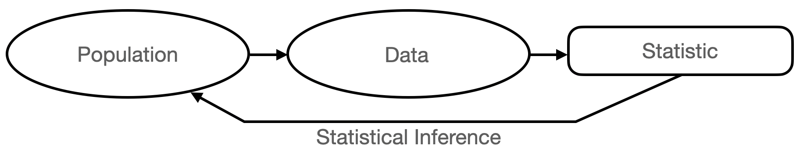
1 The Basics of Probability and Statistical Inference
In this chapter, we introduce the concept of statistical inference, in which we use functions of the data we observe (i.e., statistics) to infer the properties of the population from which they were drawn. However, we cannot work with statistics without adopting a “language” that “encodes” the random variation that is inherent in these data: that language is probability.
1.1 Data and Statistical Populations
What to take away from this section:
The act of data generation is an experiment, and the data we generate are drawn from a population. These data may be quantitative (i.e., numbers), or qualitative (i.e., words).
The goal of a statistician is to summarize the observed data using a statistic and then to use that statistic to infer properties of the population.
Data surround us, in the form of numbers, texts, images, and more that are collected and analyzed across disciplines. Tweets contain data about user sentiments. Receipts contain data about people’s buying habits. Pictures help us differentiate between, e.g., goldfish and dogs. These data\(-\)tweets, receipts, pictures\(-\)are unstructured data, so-called because we generally cannot visualize or analyze them directly. So what can we do? We can provide structure: to determine if a tweet indicates that a film was liked or disliked, we can extract counts of words indicating sentiments (e.g., “good” and “bad”). To determine the whether an image is that of a goldfish or a dog, it can be passed through appropriate filters that break down the images to a series of analyzable numbers. Etc.
The result of all this “pre-processing” is generation of structured data, data in the form of a table in which the columns represent particular measurements (e.g., the number of instances of the word “good”) and the rows representing the objects of study (e.g., individual films). Let’s focus on a single table column. Perhaps its data look like this:
34.1 28.6 37.7 52.1 26.6 28.9 ...Such data are dubbed quantitative data. Quantitative data are numbers that might be discretely valued (e.g., 1, 2, and 3) or continuously valued and measured to arbitrary precision (e.g., 15.4959735). Data may also look like this:
Heads Heads Tails Heads ...These data are categorical data; each outcome is one element from a set of categories. Here that set is {Heads,Tails}.
An experiment is the act of measuring and recording a datum (like when after each flip of a coin we record \(H\) for heads and \(T\) for tails). The data we generate from experiments are drawn from populations, the sets of all possible experimental outcomes. A population can be an existing group of objects (e.g., 52 cards in a deck, eight socks of different colors in a drawer), but it can also be hypothetical (e.g., a mathematical function, like a bell curve, which indicates the relative rates at which we would draw samples with particular values). To boil down the discipline of statistics to its essence, our goal is to use the data we have drawn from a population to say something (i.e., to infer something) about the population itself. If we record the heights of 100 people, we would like to say something about the average height of humans. If we record the ice-cream flavor preferences of 500 people, we would like to infer the proportion of humans that prefer chocolate to vanilla. Etc. Data surround us and the possibilities for inference are plentiful.
We pictorially summarize what we write above in Figure 1.1. One might immediately notice the word “statistic,” which we have yet to define. As we will see later in this chapter, a statistic is simply a function of data (such as their average value) that helps reduce data volume while (hopefully!) retaining sufficient information to allow useful inferences to happen. Defining and understanding useful statistics is a major part of this course!
But, the reader says: the course is called Modern Probability and Statistical Inference. Where is probability in all of this? Probability is the so-called “language of statistics,” and it provides the mathematical framework upon which we can build statistical inference. Remember how above we say that a population might be a mathematical function indicating the relative rates of observing experimental outcomes? Those relative rates are probabilities (or at least probability densities). Thus the structure of this chapter (and “mathematical statistics” courses as a whole): we discuss probability first, and then use our newfound knowledge to show how the enterprise of statistical inference works, both algorithmically and mathematically.
1.2 Sample Spaces and the Axioms of Probability
What to take away from this section:
The set of all experimental outcomes is a sample space (denoted \(\Omega\)).
While in real-life analysis situations we rarely work with sample spaces and their contents directly…
- …if the data-generating process is relatively simple (e.g., if we flip a coin two times and record the number of heads) and if the experimental outcomes are discretely valued, there is value in directly examining sample space contents.
The long-term frequency of the occurrence of an experiment outcome is its probability.
Probability is the long-term frequency of the occurrence of an event. For instance, what is the probability of flipping a coin and observing heads? (Intuitively, this probability is 1/2, if the coin is fair.) Or: what is the probability that a student finishes a particular test in between 30 and 40 minutes? Etc.
To build up an understanding of probability, it is conventional to start with the concept of a sample space. A sample space is the set of all possible outcomes of an “experiment” (or “trial”), which is simply some process that can, in theory, be repeated an infinite number of times. (For instance, the flipping of a coin.) For instance, if our experiment is to flip a single coin twice, the sample space would be \[ \Omega = \{HH,HT,TH,TT\} \,, \] where \(H\) and \(T\) represent observing heads and tails, respectively. (The Greek letter \(\Omega\) is a capital “omega,” or “oh-MAY-gah.”) See Figure 1.2.
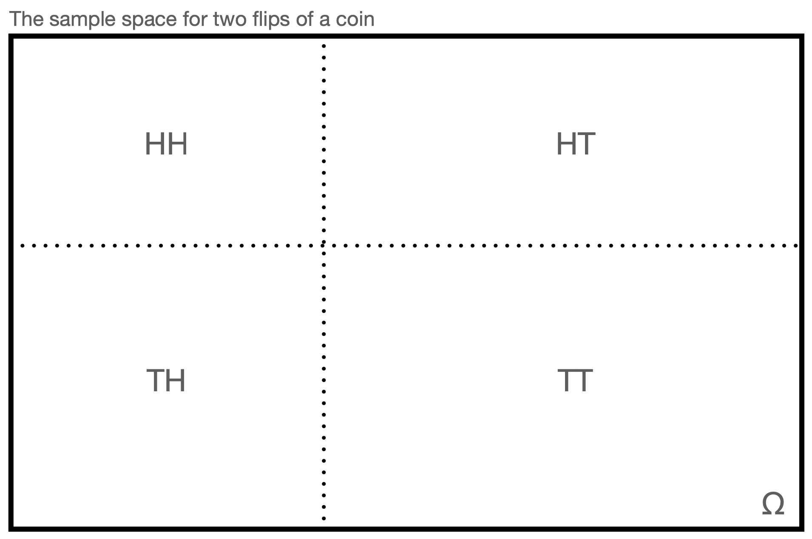
The members of the set \(\Omega\) are dubbed events and they come in two varieties:
- simple events: specific experimental outcomes (e.g., \(HH\)); any two simple events in \(\Omega\) are mutually exclusive, or disjoint, as they cannot be observed simultaneously in a single experiment.
- compound events: sets of two or more simple events (e.g., \(\{HH,HT,TH\}\), which represents the set of outcomes where heads was observed at least once).
As stated above, a sample space is a set of possible experimental outcomes; thus we can apply set notation to, e.g., define specific events as functions of others:
| term | notation | intuitive terminology |
|---|---|---|
| superset | \(A \supset B\) | “encompasses” |
| subset | \(A \subset B\) | “within” |
| union | \(A \cup B\) | “or” |
| intersection | \(A \cap B\) | “and” |
| complement | \(\bar{A}\) | “not” |
We show examples of how we use set notation in the context of samples spaces below.
Here are a few more things to keep in mind regarding sample spaces:
- The number of simple events in \(\Omega\) (i.e., the set’s cardinality) may be finite (as in the example above) or either countably or uncountably infinite (e.g., the set of all non-negative integers versus the set of real numbers). (For instance, the simple events in the experiment of repeating a task until one fails are \(\{F,SF,SSF,SSSF,\ldots\}\), where \(S\) denotes success and \(F\) denotes failure.)
- The definition of a sample space can depend upon whether the order of outcomes matters. For instance, if the order of outcomes does not matter, we could rewrite our two-coin-flip sample space as \(\Omega = \{HH,HT,TT\}\) (or \(\{HH,TH,TT\}\)).
- At no point thus far have we indicated the probability of observing any simple event. It is not the case in general that each experimental outcome is equally likely!
Regarding the last point above: while we may not know the probability of observing any simple event, there are some things we can say about its long-term relative frequency of occurrence:
- it must be \(> 0\) and \(\leq 1\);
- the relative frequencies of all simple events in \(\Omega\) must sum to 1; and
- the relative frequency of a compound event must equal the sum of the relative frequencies of its component simple events.
These statements appear to be self-evident, and as thus may be dubbed axiomatic. (A mathematical axiom is a statement accepted without proof.) In probability theory, these statements were recast as the so-called Kolmogorov axioms, introduced by Kolmogorov (1933). Let \(A\) denote an event within \(\Omega\) (i.e., \(A \subset S\)), either simple or compound. A probability measure on \(\Omega\) is a function \(P\) from subsets of \(\Omega\) to \(\mathbb{R}^n\) that satisfies the following:
- \(P(A) \in [0,1]\);
- \(P(\Omega) = 1\); and
- if \(\{B_1,\ldots,B_k\}\) is a set of mutually exclusive simple or compound events, then \(P(\bigcup_{i=1}^k B_i) = \sum_{i=1}^k P(B_i)\), where the symbol \(\bigcup\) refers to the union of the set of events, i.e., the combination of all the events in the set into a single compound event.
1.2.1 Examples
1.2.1.1 Utilizing Set Notation
Let’s suppose that we have in our hand one six-sided die, with faces numbered 1 through 6. We roll it once, and observe the value on the uppermost face. The sample space is \[ \Omega = \{1,2,3,4,5,6\} \,. \] Let the event \(A\) be all odd-numbered outcomes, and let the event \(B\) be all outcomes less than 4. Thus \(A = \{1,3,5\}\) and \(B = \{1,2,3\}\).
- What is \(\bar{A}\), the complement of \(A\)? It is the set of all outcomes not in \(A\), i.e., the set of all even-numbered faces: \(\bar{A} = \{2,4,6\}\).
- What is \(A \cup B\), the union of \(A\) and \(B\)? It is the set of all outcomes observed in either \(A\) or \(B\), without double counting: \(A \cup B = \{1,2,3,5\}\) (and not \(A \cup B = \{1,1,2,3,3,5\}\)…it is meaningless to write out the same experimental outcome twice).
- What is \(A \cap B\), the intersection of \(A\) and \(B\)? It is the set of all outcomes observed in both \(A\) and \(B\), again without double counting: \(A \cap B = \{1,3\}\).
We note that we can combine unions, intersections, and complements in, e.g., the distributive law, \[ A \cap (B \cup C) = (A \cap B) \cup (A \cap C) \,, \] the associative law, \[ A \cup (B \cap C) = (A \cup B) \cap (A \cup C) \,, \] and De Morgan’s laws, \[ \overline{A \cup B} = \bar{A} \cap \bar{B} ~~\mbox{and}~~ \overline{A \cap B} = \bar{A} \cup \bar{B} \,. \]
1.2.1.2 Working With Contingency Tables
Let’s assume that we are given the following information about two events \(A\) and \(B\):
| \(A\) | \(\bar{A}\) | |
| \(B\) | 0.45 | 0.12 |
| \(\bar{B}\) | 0.21 | 0.22 |
This is dubbed a contingency table (or, more specifically here, a two-by-two contigency table). The numbers in each cell represent probabilities; for instance, \(P(A \cap B) = 0.45\). A contingency table is appropriate to work with if the probabilities associated with each event do not change from experiment to experiment.
- What is \(P(A)\)? We can determine this by summing down the \(A\) column: \(P(A) = P[A \cap \Omega] = P[A \cap (B \cup \bar{B})] = P[(A \cap B) \cup (A \cap \bar{B})]\); since \(A \cap B\) and \(A \cap \bar{B}\) are disjoint, we can view the \(\cup\) as addition, and so \(P(A) = P(A \cap B) + P(A \cap \bar{B}) = 0.45 + 0.21 = 0.66\).
- What is \(P(A \cup B)\)? Utilizing De Morgan’s laws, this would be \(1 - P(\overline{A \cup B}) = 1 - P(\bar{A} \cap \bar{B}) = 1 - 0.22 = 0.78\).
- What is the probability of observing \(A\) or \(B\), but not both? This would be \(P(A \cup B) - P(A \cap B)\), which is \(0.78 - 0.45 = 0.33\).
It is well worth taking the time to see how one could derive each of these answers through visual inspection of the table. For instance, \(P(A \cup B)\) is 1 minus the value in the cell at lower right, which does not lie in the row for \(B\) or the column for \(A\).
1.3 Conditional Probability and the Independence of Events
What to take away from this section:
The probabilities of simple and compound events can be affected by invoking conditions.
If invoking a condition does not change the probability of an event, then that event is said to be independent of that conditioning event.
Intuitively, we can picture a sample space \(\Omega\) and two of its constituent events as looking something like what we show in Figure 1.3.
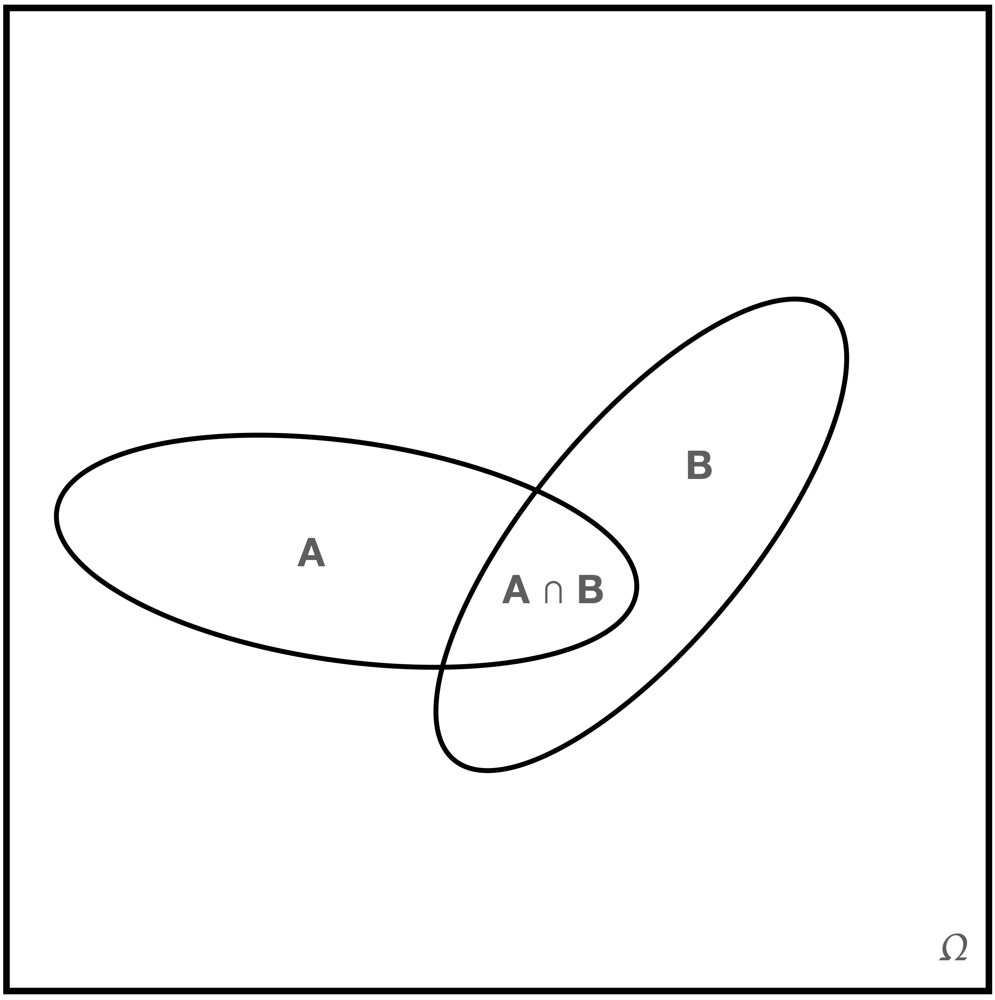
We can imagine that the geometric areas of each region represent probability, with \(P(\Omega) = 1\) (given the second Kolmogorov axiom) and \(P(A \cap B) > 0\) being the probability that both \(A\) and \(B\) occur during an experiment. (Perhaps \(A\) is the event of speaking French and \(B\) is the event of living is Brussels. The symbol \(\cap\) denotes the intersection or overlap between two sets, whereas the analogous symbol \(\cup\) represents the union of two sets.)
We can use this intuitive picture to illustrate the concept of conditional probability. A stated event probability, such as \(P(A)\), is an unconditional probability: its occurrence does not depend on whether or not other events occur. To denote a conditional probability, we add a vertical bar and place the conditions to the right of it. For instance, \(P(A \vert B)\) denotes the probability that the event \(A\) is observed, given that the event \(B\) is observed. (Note that there is no implied causality: it is not necessarily the case that \(B\) occurring is “causing” changes to the probability that \(A\) will occur.) To illustrate why \(P(A)\) may not equal \(P(A \vert B)\), we first point out that \(P(A) = P(A \vert \Omega)\), which we may think of as “the probability of observing the event \(A\) if we observe the event \(\Omega\),” which is the ratio of geometric areas of \(A \cap \Omega\) and \(\Omega\): \[ P(A) = P(A \vert \Omega) = \frac{P(A \cap \Omega)}{P(\Omega)} \,. \] When we condition on the event \(B\), we are reducing the set of possible outcomes from the full sample space \(\Omega\) to \(B\), i.e., we are replacing \(\Omega\) in the expression above with \(B\): \[ P(A \vert B) = \frac{P(A \cap B)}{P(B)} \,, \]
In the context of our intuitive picture, we are changing the one shown above to the one we show in Figure 1.4.
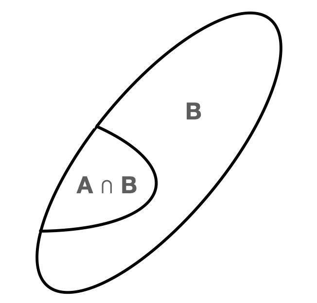
\(B\) thus defines a new “sample space.”
Two events \(A\) and \(B\) are independent if the probability of observing one does not depend on the probability of observing the other. The intuitive picture many have of independence is the one shown in Figure 1.5.
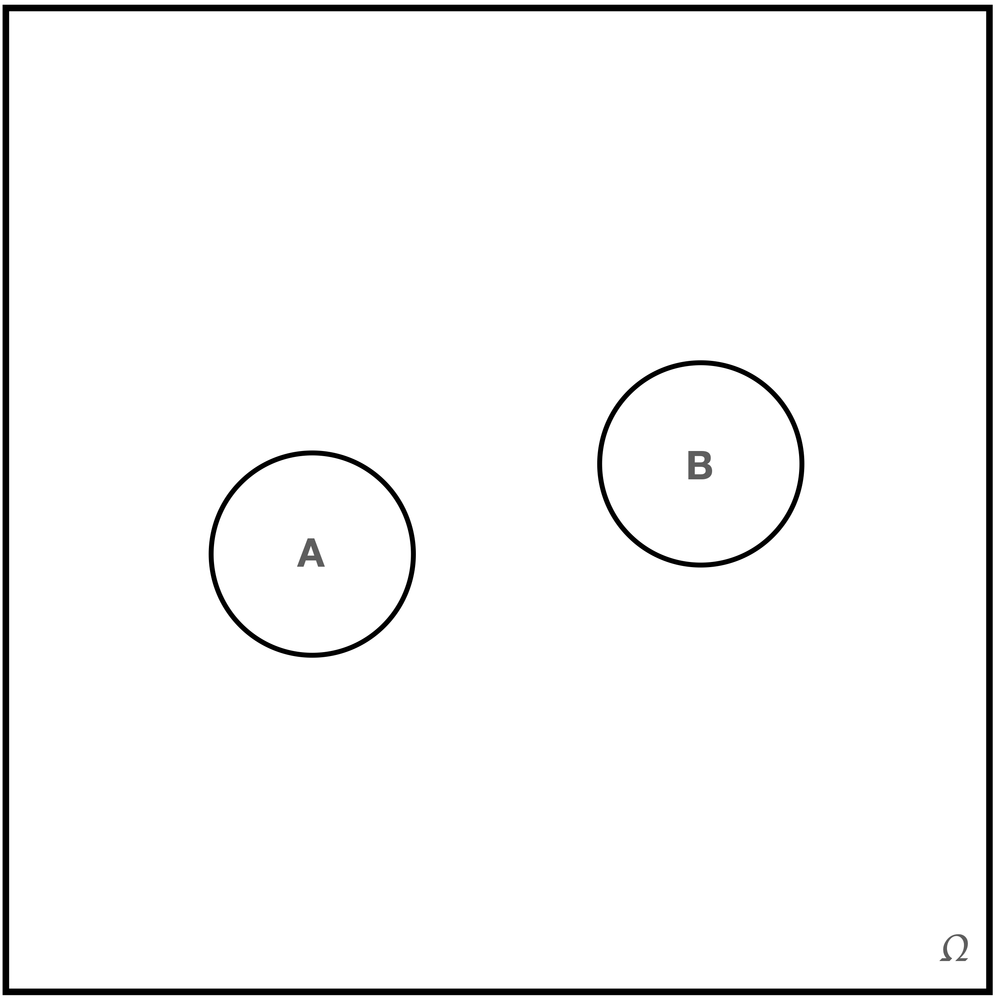
The events \(A\) and \(B\) do not overlap…hence they are independent events, right? No: they are simply disjoint events. Also, with reflection, we realize that if, e.g., the event \(A\) is observed in a given experiment, then we know that \(B\) cannot be observed. So these events are very much dependent! Figure 1.6 shows how we can actually represent \(A\) and \(B\) as independent events. In this figure, the ratio of the geometric area associated with the event \(A\) to the geometric area of \(\Omega\) is equal to the ratio of the areas of \(A \cap B\) and \(B\). Thus we can write that \[ P(A) = P(A \vert \Omega) = \frac{P(A \cap \Omega)}{P(\Omega)} = \frac{P(A \cap B)}{P(B)} = P(A \vert B) \,. \] The probability of observing the event \(A\) is unchanged if the event \(B\) occurs: \(A\) and \(B\) are independent events.
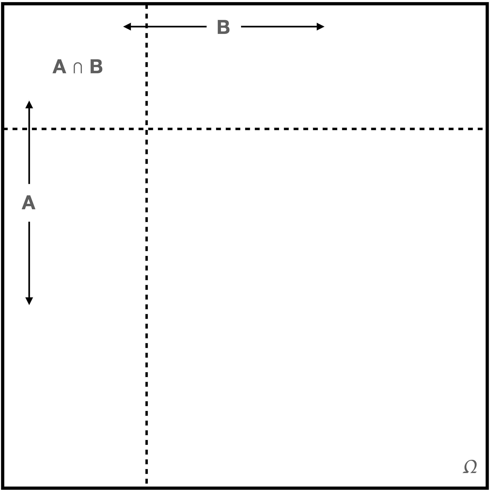
1.3.1 Examples
1.3.1.1 Visualizing Conditional Probabilities: Contingency Tables
Let’s recall the two-by-two contingency table we defined in the previous section, but with some additional information added:
| \(A\) | \(\bar{A}\) | ||
| \(B\) | 0.45 | 0.12 | 0.57 |
| \(\bar{B}\) | 0.21 | 0.22 | 0.43 |
| 0.67 | 0.33 |
The numbers in the so-called “margins” are the row and column sums, so, for instance, \(P(A) = 0.67\). This information is useful to have when computing conditional probabilities. In analogy with what was stated above about imposing conditions and what that does to the sample space, here we can say that imposing a condition will restrict us to a given row or a given column. For instance, what is \(P(\bar{A} \vert B)\)? The condition restricts us to the top row, and within that row, the probability of observing the event \(\bar{A}\) is 0.12/0.57 = 0.21. So \(P(\bar{A} \vert B) = P(\bar{A} \cap B) / P(B) = 0.21\).
Now, are \(A\) and \(B\) independent events? The easy way to visually infer this given a two-by-two table is to see if the rows (or columns) are multiples of each other…meaning, here, is there a number \(a\) such that \(0.45 = 0.21 a\) and \(0.12 = 0.22 a\)? The answer here is no…so the events \(A\) and \(B\) are dependent events. (The conventional, yet longer way to determine independence is to see if, e.g., \(P(A \vert B) = P(A)\); if so, \(A\) and \(B\) are independent.)
1.3.1.2 Conditional Independence
If \(A\) and \(B\) are independent events, is it automatically the case that the events \(A \vert C\) and \(B \vert C\) are also independent events?
Recall the figure above that shows how independent events appear in a Venn diagram. Recall also that if we impose a condition \(C\), we effectively change the sample space from \(\Omega\) to \(C\). Imagine \(C\) as an arbitrarily shaped region superimposed on the last figure, so that now we have a situation like the one in Figure 1.7.
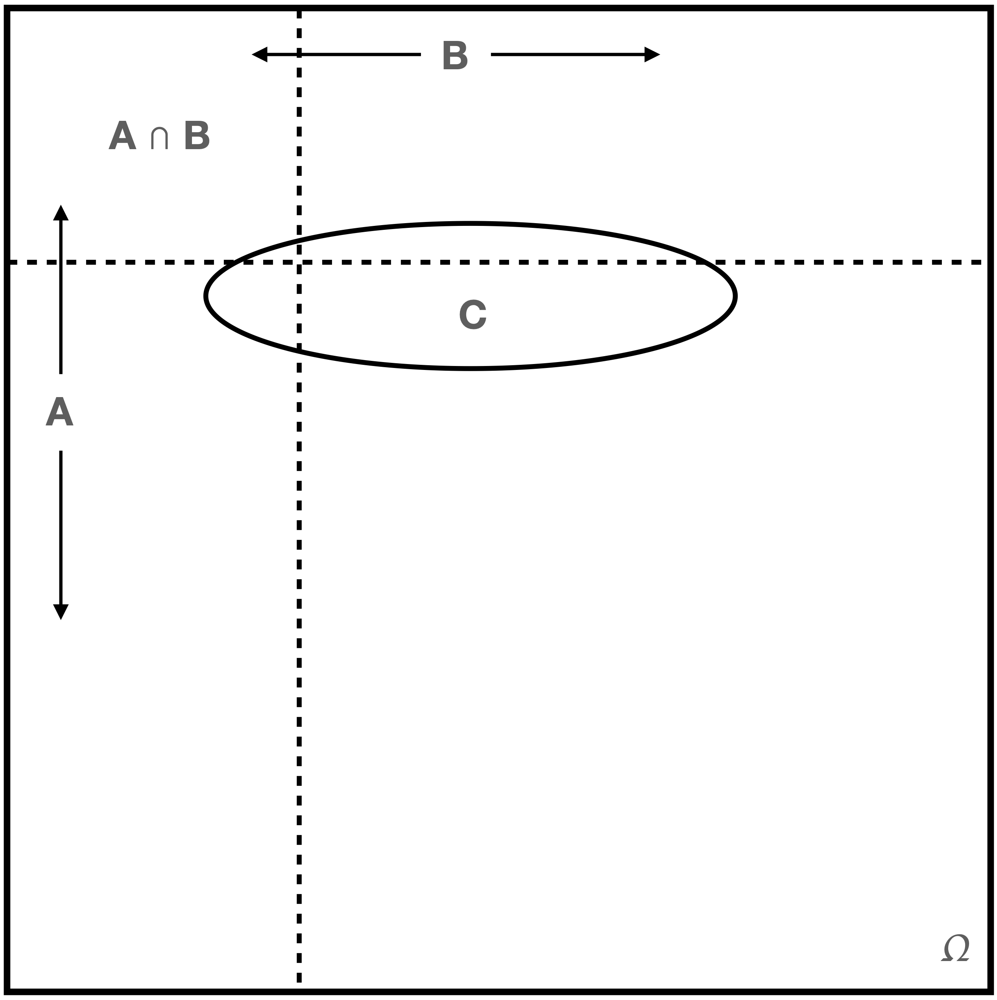
The events \(A\) and \(B\) are conditionally independent given \(C\) if \(P(C) > 0\) and \(P(A \cap B \vert C) = P(A \vert C) P(B \vert C)\). As we can see in Figure 1.7, \(C\) can be made to overlap \(B\), \(A\), and \(A \cap B\) in any number of ways such that \(P(A \cap B \vert C) \neq P(A \vert C) P(B \vert C)\)…so it is not the case that if \(A\) and \(B\) are independent, \(A \vert C\) and \(B \vert C\) are always independent. (If \(C\) had a rectangular shape with a horizontal base and top and vertical sides, conditional independence would hold. Think through why this would be true…)
1.4 Further Laws of Probability
What to take away from this section:
The four core tools for solving conditional probability problems are…
the multiplicative law;
the additive law;
the law of total probability; and
Bayes’ rule.
Now that we have learned about the concepts of conditional probabilities and independence, we can write down some useful laws that one can use to solve an array of probability-based problems.
- Multiplicative Law. This follows simply from rearranging the definition of conditional probability: \[ P(A \cap B) = P(A) P(B \vert A) = P(B) P(A \vert B) \] We can generalize this law given an arbitrary number of events \(k\): \[\begin{align*} P(A_1 \cap A_2 \cap \cdots \cap A_k) &= P(A_1 \vert A_2 \cap \cdots \cap A_k) P(A_2 \cap \cdots \cap A_k) = \cdots \\ &= P(A_k) \prod_{i=1}^{k-1} P(A_i \vert A_{i+1} \cap \cdots \cap A_k) \,, \end{align*}\] where \(\prod\) is the product symbol, the multiplicative analogue to the summation symbol \(\sum\).
- Additive Law. The probability of the union of two events \(A\) and \(B\) is \[ P(A \cup B) = P(A) + P(B) - P(A \cap B) \,. \] If the events \(A\) and \(B\) are not disjoint, then if we add their probabilities, we count the probability of \(A \cap B\) twice…hence the subtracted term.
- Law of Total Probability (LoTP). Assume that we partition the sample space \(\Omega\) into \(k\) disjoint (simple or compound) events \(\{B_1,\ldots,B_k\}\), all of which have non-zero probability of occurring. Then, given any event \(A\), we can write \[ P(A) = \sum_{i=1}^k P(A \vert B_i) P(B_i) \,. \]
- Bayes’ Rule. Continue to assume that the sample space is partitioned into the events \(\{B_1,\ldots,B_k\}\). The conditional probability of each of these events, given that \(A\) occurs, is \[ P(B_i \vert A) = \frac{P(A \vert B_i) P(B_i)}{\sum_{j=1}^k P(A \vert B_j)P(B_j)} = \frac{P(A \vert B_i)P(B_i)}{P(A)} \,. \]
1.4.1 Examples
1.4.1.1 The Additive Law for Independent Events
Let’s assume that for a given experiment, we can define the independent events \(A\) and \(B\), with \(P(A) = 0.6\) and \(P(B) = 0.4\). What is \(P(A \cup B)\)?
In general, when solving probability problems, we look at all the rules and relationships at our disposal and see which one (or more!) contains the probabilities we know and the one we don’t know, and we use that rule or relationship to derive the solution. Here, there is nothing that directly relates \(A\) and \(B\) to \(A \cup B\)…the events may overlap when represented on a Venn diagram, and we don’t know by how much. Except…we are given the word “independent.” That allows us to say that \(P(A \cap B) = P(A)P(B)\)…and now we know that the additive law is in play: \[\begin{align*} P(A \cup B) &= P(A) + P(B) - P(A \cap B) \\ &= P(A) + P(B) - P(A \vert B)P(B) \\ &= P(A) + P(B) - P(A)P(B) = 0.6 + 0.4 - 0.6 \cdot 0.4 = 0.76 \,. \end{align*}\] Is this the only way to solve the problem? No…we know from De Morgan’s laws that \(\overline{A \cup B} = \bar{A} \cap \bar{B}\), and thus \[\begin{align*} P(A \cup B) &= 1 - P(\overline{A \cup B}) = 1 - P(\bar{A} \cap \bar{B}) = 1 - P(\bar{A} \vert \bar{B})P(\bar{B}) \\ &= 1 - P(\bar{A})P(\bar{B}) = 1 - (1-0.6)(1-0.4) = 0.76 \,. \end{align*}\] There is no “right” way to solve a probability problem…just correct ones.
1.4.1.2 The Monty Hall Problem
Let’s Make a Deal is a game show that has appeared on television at various times since 1963. During one part of the show, contestants are brought on stage and presented with three closed doors; behind one is an expensize prize (say, a car or an around-the-world cruise), and behind the other two are inexpensive prizes (like a year’s supply of Turtle Wax). The contestant is asked to pick a door (say, Door #1), at which point the show’s host will open another door (say, Door #3) and show the inexpensive prize behind that door (thereby taking that door out of play). The contestant is then asked if they want to stick with the door they’ve chosen (here, Door #1), or switch their choice to the other unopened door (here, Door #2). What should we advise the constestant to do?
The original, and most famous, host of Let’s Make a Deal was Monty Hall. Hence: the Monty Hall Problem. (Note that the problem is often stated such that there is a car being behind one door and goats behind the other two. The author is old enough to have seen the show in its heyday and he recalls seeing no goats. Or maybe they made no impression at the time…)
Assume, without loss of generality, that Door #1 is chosen. Then, let
- \(O_i\) = “Monty Hall opens Door #\(i\)”
- \(C_i\) = “The car is behind Door #\(i\)”
and assume that \(P(C_i) = 1/3\) for all \(i\). (The car could have been placed behind any door before the show was filmed.) The sample space of experimental outcomes is \[ \Omega = \{ O_2 \cap C_1 , O_2 \cap C_3 , O_3 \cap C_1 , O_3 \cap C_2\} \,. \] Why not \(O_2 \cap C_2\) and \(O_3 \cap C_3\)? Monty is not stupid: he won’t open the door the car is behind. (He knows where it is!)
Let’s assume, again without any loss of generality, that Monty opens Door #3. The probability we want to compute is \(P(C_2 \vert O_3)\): what is the probability that the car is actually behind Door #2? (Note that this is \(1 - P(C_1 \vert O_3)\)…again, \(P(C_3 \vert O_3) = 0\), as Monty is not stupid.) Is this probability 1/2? We utilize Bayes’ rule and the LoTP to write \[\begin{align*} P(C_2 \vert O_3) &= \frac{P(O_3 \vert C_2) P(C_2)}{P(O_3)}\\ &= \frac{P(O_3 \vert C_2) P(C_2)}{P(O_3 \vert C_2) P(C_2) + P(O_3 \vert C_1) P(C_1)}\\ &= \frac{P(O_3 \vert C_2)}{P(O_3 \vert C_2) + P(O_3 \vert C_1)}\,. \end{align*}\] What do we know?
- \(P(O_3 \vert C_2) = 1\): if the car is behind Door #2, Monty has to open Door #3
- \(P(O_3 \vert C_1) = 1/2\): Monty can open either Door #2 or #3 if the car is behind Door #1
Hence \[ P(C_2 \vert O_3) = \frac{1}{1 + 1/2} = \frac{2}{3} \,. \] We should advise the contestant to open Door #2!
Confused? Think about the solution this way: the contestant has a one-third chance of correctly picking the door the car is behind, and a two-thirds chance of being wrong. Opening one of the other doors (while knowing there is no car behind it) doesn’t change these conditions at all: the contestant still has a one-third chance of having initially picked the correct door. Thus the contestant should change their pick to the other unopened door.
1.4.1.3 Visualizing Conditional Probabilities: Tree Diagrams
In the previous sections, we show how one can use contingency tables to aid the visualization of probabilities (and to solve for probabilities of simple and/or compound events). Here we show another, somewhat more general probability visualizer: the tree diagram. Why “somewhat more general”? First, a tree in a tree diagram can have arbitrary depth: if we have events \(A\), \(B\), and \(C\), the table would be three-dimensional, with the axes representing the experimental outcome in terms of \(A\) and \(\bar{A}\), \(B\) and \(\bar{B}\), and \(C\) and \(\bar{C}\). A table is not an optimal means to represent probabilities. And second, a tree is arguably a more natural means to represent probabilities when an experiment represents sequential outcomes, particularly when we sample without replacement.
Let’s elaborate on that second point. Let’s say we have a drawer with five socks, three of which are red and two of which are blue. We plan to draw three socks in succession from the drawer without placing the socks back into the drawer, but we will stop early if we draw two socks of the same color on the first two draws. What is the probability that our final sample contains two blue socks?
We can write out the following: if \(B_i\) and \(R_i\) are the probabilities of drawing a blue and red sock from the drawer when taking out the \(i^{\rm th}\) sock, then \(P(B_1) = 2/5\) and \(P(R_1) = 3/5\)…and \(P(B_2 \vert B_1) = 1/4\) because there is one less blue sock in the drawer, and… Actually, this gets tiring quickly. Let’s use a tree diagram instead.
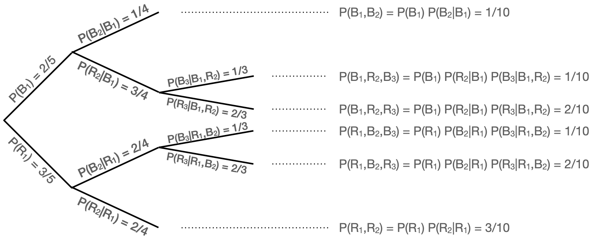
In Figure 1.8, we show the tree diagram for this problem. We note some aspects of this diagram:
- the tree can be truncated along some branches (here, that’s because we stop removing socks from the drawer if we remove two of the same color in the first two draws);
- at any branching point, the (conditional) probabilities of going down each branch sum to one; and
- the probability of ending up at a particular leaf (where the leaves collectively represent the simple events of the experiment) is the product of all the branch probabilities leading to that leaf.
So, now, what is the probability of drawing two blue socks in this experiment? To find that, we determine which leaves are associated with drawing two blue socks; from the top, that would be leaves 1, 2, and 4, with probabilities 1/10, 1/10, and 1/10. Because simple events are disjoint by definition, the probability of the compound event is simply the sum of the probabilities of the simple events, which here is 3/10. In any given replication of this experiment, we have a 30% chance of ending up with two blue socks.
1.5 Random Variables
What to take away from this section:
Working directly with sample space contents only works in limited situations (such as having a small number of discrete experiment outcomes).
We can shift our focus from sample spaces to, e.g., the real-number line by encapsulating the contents of the former as random variables.
Random variables themselves do not contain information about the probability of the events they represent…for that, we will need to pair random variables with probability distributions, as we will show in the next section.
Let’s say that we perform an experiment in which we flip a fair coin three times. Let \(H\) denote observing heads, and \(T\) tails. The sample space of outcomes \(\Omega\) is \[ \{ HHH,HHT,HTH,THH,HTT,THT,TTH,TTT\} \] and each outcome is observed with probability 1/8. What is the probability of observing exactly one tail? We can determine this by laboriously generating a table of probabilities, like so: \[\begin{align*} P(\mbox{"no tails"}) &= P(HHH) = 1/8 \\ P(\mbox{"one tail"}) &= P(HHT \cup HTH \cup THH) = 3/8 \\ P(\mbox{"two tails"}) &= P(HTT \cup THT \cup TTH) = 3/8 \\ P(\mbox{"three tails"}) &= P(TTT) = 1/8 \,. \end{align*}\] One can easily imagine how, if we were to flip a coin 50 times, or 500 times, the generation of tables would be onerous. A better way to portray the information in a sample space is to use a random variable. In probability theory, a random variable \(X\) is a measurable function mapping from a set of outcomes (here, \(\Omega\)) to a measurable space (here, \(\mathbb{R}^n\), where \(\mathbb{R}^1 = \mathbb{R}\) is the real-number line). (See Figure 1.9.) While \(X\) is a function, it is natural in an undergraduate context to think of it as a variable whose value is an experimental outcome. For instance, if we define \(X\) as being “the number of tails observed in three flips of a fair coin,” then \(P(X=1) = 3/8\). (Below, we will complete our transition away from laboriously built probability tables by introducing mathematical functions\(-\)probability mass functions or probability density functions associated with distributions\(-\)that allow us to compute probabilities more generally, as a function of an arbitrary observed value \(X=x\) or a range of observed values \(X \in [a,b]\).)
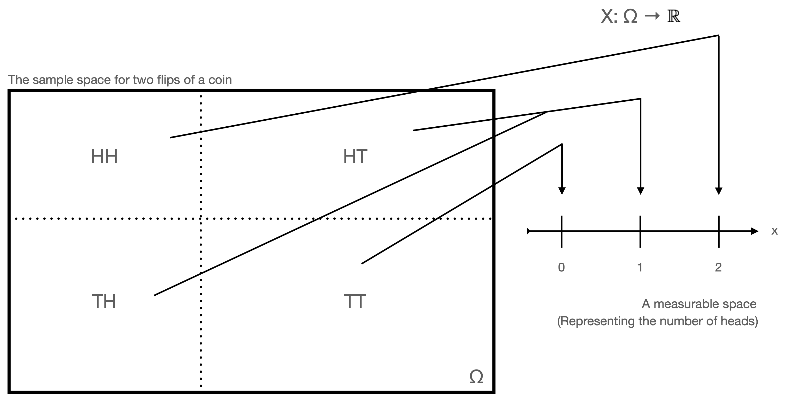
There are a few initial things to note about random variables. First, they are conventionally denoted with capital Latin letters (e.g., \(X\), \(Y\), \(Z\)). Second, note the words “if we define” above. There is no unique random variable associated with a sample space. In addition to \(X\), we could just as easily have defined \(Y\) as the number of heads observed, or \(Z\) as having value 0 if at least one head and at least one tail are observed, and 1 otherwise, etc. Third, and most important, is that random variables come in two types, discrete and continuous:
- A discrete random variable \(X\) maps the sample space \(\Omega\) to countably finite (e.g., \(\{0,1\}\)) or infinite (e.g., \(\{0,1,\ldots,\}\)) outcomes.
- A continuous random variable \(X\) maps the sample space \(\Omega\) to an outcome that is uncountably infinite (e.g., \([0,1]\) or \([0,\infty)\)).
1.6 Probability Distributions: Density and Mass Functions
What to take away from this section:
To quantify the probability associated with a random variable, we utilize probability distributions.
The fundamental way by which we encapsulate the probabilities of…
discrete experimental outcomes is the probability mass function or pmf
continuous experimental outcomes is the probability density function or pdf
Probability mass (or density) functions are simply mathematical functions that are non-negative and sum (or integrate) to one.
Probability mass and density functions can contain parameters, collectively denoted \(\theta\), which are constants that dictate their shapes and/or locations along the real-number line.
The set of all shapes and/or locations for a pmf or pdf comprises a family of distributions.
In an experiment, we sample data according to a probability distribution, whose identity and/or properties may or may not be known…
- foreshadowing: statistical inference is the act of inferring what we do not know, given a sample of data
A probability distribution is a mapping \(P: \Omega \rightarrow \mathbb{R}^n\) that describes how probabilities are distributed across the values of a random variable. (A random variable simply maps events in a sample space to a measurable space like the real-number line, without regard to the probability of the event. A distribution adds this additional layer of information.) There are different ways to mathematically define a distribution; here, we concentrate upon
- the probability mass function (or pmf): if \(X\) is a discrete random variable, this represents the probability that \(X\) takes on a particular value \(x\), i.e., \(p_X(x) = P(X = x)\); or
- the probability density function (or pdf): if \(X\) is a continuous random variable, this represents the probability density (think of this as the “probability per unit interval”) at the value \(x\), i.e., \(f_X(x)\).
To be clear, we can represent a given distribution with a pmf or a pdf, but not both simultaneously; the choice is dictated by whether \(X\) is discretely or continuously valued. (It is possible to mix probability masses and densities into a single distribution, however. See the example below.) Later, we introduce two alternatives to pmfs/pdfs: the cumulative distribution function (cdf), and the moment-generating function (mgf).
Probability mass and density functions have two fundamental constraints: (a) they are non-negative; and (b) they sum or integrate to 1:
| pmf | |
|---|---|
| \(p_X(x) \in [0,1]\) | \(f_X(x) \in [0,\infty)\) |
| \(\sum_x p_X(x) = 1\) | \(\int_x f_X(x) dx = 1\) |
Before continuing on to discussing properties of distributions, we reiterate the point that one cannot interpret a pdf \(f_X(x)\) as the probability of sampling the value \(x\)! It is, again, a probability density function and not a probability itself; to determine a probability, we utilize integration: \[ P(a \leq X \leq b) = \int_a^b f_X(x) dx \,. \] To drive home the point that a pdf does not itself represent probability, we note that for any value \(a\), \[ P(X = a) = \int_a^a f_X(x) dx = 0 \,. \]
1.6.1 Examples
1.6.1.1 A Simple Probability Density Function
Let’s assume that we have defined the following pdf: \[ f_X(x) = \left\{ \begin{array}{cl} 2x & 0 \leq x \leq 1 \\ 0 & \mbox{otherwise} \end{array} \right. \,. \] We visualize this pdf in Figure 1.10.
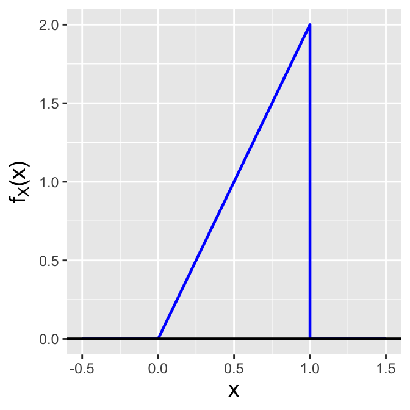
This pdf helps to illustrate many of the points made above. Note that it is (a) non-negative and although its maximum value is \(> 1\), (b) it integrates > to 1. (We need not actually integrate here, as geometry is sufficient: the area under the curve is 1/2 \(\times\) 1 \(\times\) 2 = 1.)
How would one interpret this pdf? Where its value is larger, we are more likely to sample data. Full stop. What is the probability of sampling a datum between 0 and 1/2? Again, we can use geometry and see that the area under the curve is 1/2 \(\times\) 1/2 \(\times\) 1 = 1/4. (Which means the probability of sampling a datum between 1/2 and 1 must be \(1 - 1/4 = 3/4\).)
Let’s extend this example a bit by adding a condition. For instance, what is the probability of sampling a datum between 1/4 and 1/2, given that we sample a datum between 0 and 3/4? In analogy with how we worked with conditional probabilities above, we can write that \[\begin{align*} P(1/4 \leq X \leq 1/2 \, \vert \, 0 \leq X \leq 3/4) &= \frac{P(1/4 \leq X \leq 1/2 \cap 0 \leq X \leq 3/4)}{P(0 \leq X \leq 3/4)}\\ &= \frac{P(1/4 \leq X \leq 1/2)}{P(0 \leq X \leq 3/4)} \,. \end{align*}\] (How does this differ from computing the unconditional probability \(P(1/4 \leq X \leq 1/2)\)? Technically, it does not…we could write out a similar expression to the one above. But we note that the denominator would be \(P(0 \leq X \leq 1) = 1\) and thus it would “go away.”) Using geometrical arguments, we should be able to convince ourselves that the answer we seek is 1/3.
One last point we will make here is that for a continuous distribution, it is meaningless to compute \(P(X = a)\). For instance: \[ P\left(X = \frac{1}{2}\right) = \int_{1/2}^{1/2} 2 x dx = \left. x^2 \right|_{1/2}^{1/2} = \frac{1}{4} - \frac{1}{4} = 0 \,. \] What are we to make of this? Recall that a pdf is a probability density function, and that one can think of it as having units of probability per unit interval…so one has to integrate the pdf over an interval of length greater than zero to derive a non-zero probability value.
1.6.1.2 Shape Parameters and Families of Distributions
In the previous example, the stated pdf was the stated pdf: there was no means by which to change its shape. We can generalize it by utilizing a shape parameter: \[ f_X(x \vert \theta) = \left\{ \begin{array}{cl} \theta x^{\theta-1} & 0 \leq x \leq 1 \\ 0 & \mbox{otherwise} \end{array} \right. \,, \] where in the previous example, \(\theta = 2\). It is conventional to denote a population parameter or a set of such parameters with the Greek letter \(\theta\) (theta, pronounced “thay-tah”). Here, \(\theta\) represents a single, constant parameter whose value is \(> 0\). (If \(\theta\) were negative, for instance, \(f_X(x \vert \theta)\) would be \(< 0\), which is not allowed!) \(f_X(x \vert \theta)\), with \(\theta \in \Theta = (0,\infty)\), is perhaps confusingly dubbed a family of distributions. (One might think that a family would refer to a set of different mathematical forms for pdfs, like \(\theta x^{\theta-1}\) and \(e^{-x/\theta}/\theta\), etc., but it actually refers to the fact that \(\theta\) can take on more than one value, yielding a family of shapes as illustrated in Figure 1.11.)
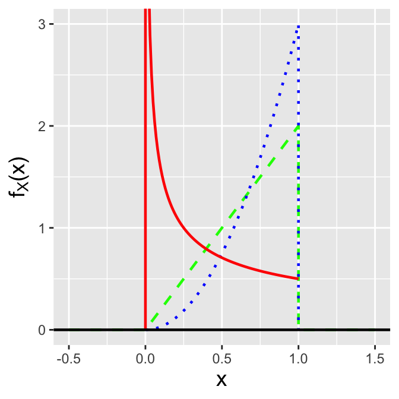
1.6.1.3 A Simple Probability Mass Function
Let’s play a game: we throw a dart at a board that has ten numbers on it, 1 through 10. Assume that we are guaranteed to hit the board, and that the regions associated with each number have the exact same size. If we hit an even number, we get 0 points, while if we hit an odd number, we get 2 points. Furthermore, if we hit a prime number, we get a bonus of 1 point. What is the probability mass function for the number of points we will score given a single throw of the dart?
If we hit the 4, 6, 8, or 10, we get 0 points. (2 is prime, so we’d get a bonus of 1 point by hitting that.) If we hit the 9, we get 2 points, and if we hit the 1, 3, 5, or 7, we get 3 points. Hence the probability mass function is
| \(x\) | \(p_X(x)\) |
|---|---|
| 0 | 4/10 |
| 1 | 1/10 |
| 2 | 1/10 |
| 3 | 4/10 |
We see that this pmf is (a) non-negative and (b) has values \(p_X(x)\) that lie between 0 and 1. Because we are dealing with masses and not densities, probability calculations involve summations (while taking care to note whether one or both limits of summation lie at a mass, and if so, whether or not the inequality is, e.g., \(>\) or \(\geq\)). For instance, what is the probability of achieving a score greater than 1 point? \(P(X > 1) = p_X(2) + p_X(3) = 1/2\). What about a score of 3 points, given a score greater than 0 points? \[\begin{align*} P(X = 3 \vert X > 0) &= \frac{P(X = 3 \cap X > 0)}{P(X > 0)} = \frac{P(X = 3)}{P(X > 0)}\\ &= \frac{p_X(3)}{p_X(1)+p_X(2)+p_X(3)} = \frac{4}{1+1+4} = \frac{2}{3} \,. \end{align*}\]
1.6.1.4 A More Complex Example Involving Both Masses and Densities
There is no reason why masses and densities cannot be combined into a single probability distribution. For instance, perhaps we have the following: \[ h_X(x) = \left\{ \begin{array}{cc} 1/2 & x \in [0,1] \\ 1/2 & x = 2 \end{array} \right. \,. \] There is nothing special about this function; the mathematics of probability calculations is just a tad more complicated than before. For instance, what is the probability of sampling a value greater than 3/4? \[ P(X > 3/4) = \int_{3/4}^1 h_X(x) dx + h_X(2) = \frac{1}{2} \left. x \right|_{3/4}^1 + \frac{1}{2} = \frac{1}{8} + \frac{1}{2} = \frac{5}{8} \,. \] Integrate over the domain(s) where densities are defined and sum over the domain(s) where masses are defined. Done!
1.7 Probability Distributions: Expected Value and Variance
What to take away from this section:
To characterize (or summarize the information contained in) a probability distribution, we can report…
the average value of a set of data sampled according to that distribution, i.e., the expected value (or expectation)
the width of the region of the real-number line in which data sampled according to a distribution are concentrated, i.e., the standard deviation (or relatedly, the variance)
A probability distribution represents the rates of occurrence of different experimental outcomes. Can we determine an “average” outcome? In other words, can we determine what value to expect when we next run the experiment? The answer is yes: this is the expected value of a random variable (or expectation) and it is the weighted average of all possible experimental outcomes: \[\begin{align*} E[X] &= \frac{\sum_x x p_X(x)}{\sum_x p_X(x)} = \sum_x x p_X(x) ~~ \mbox{(discrete r.v.)} \\ &= \frac{\int_x x f_X(x) dx}{\int_x f_X(x) dx} = \int_x x f_X(x) dx ~~ \mbox{(continuous r.v.)} \,. \end{align*}\] In each case, the denominator disappears because it equals 1, by definition. Note that Greek letter \(\mu\) (mu, pronounced “myoo”), which conventionally denotes the mean value of a pdf or pmf, is also sometimes used interchangeably with \(E[X]\). See Figure 1.12.
It is important here to note the following:
- The input to the expected value operator is (usually!) a random variable, so that input is capitalized. In other words, we always write \(E[X]\) and not \(E[x]\). (\(x\) is just a coordinate on the real-number line…its expected value is simply \(x\) itself. See “Expected Value Tricks” in the examples below.)
- The expected value is a constant; it is not random! For any given pmf or pdf, the average value of a sampled datum does not change from experiment to experiment…there is no randomness.
Now, because the expected value is simply a weighted average, we can write down a more general expression for it: \[\begin{align*} E[g(X)] &= \frac{\sum_x g(x)p_X(x)}{\sum_x p_X(x)} = \sum_x g(x) p_X(x) ~~ \mbox{(discrete r.v.)} \\ &= \frac{\int_x g(x)f_X(x) dx}{\int_x f_X(x) dx} = \int_x g(x) f_X(x) dx ~~ \mbox{(continuous r.v.)} \,. \end{align*}\] This has been dubbed the “Law of the Unconscious Statistician” (e.g., Ross (1988), as noted by Casella and Berger (2002)) due to the fact that we all think of it as a definition…and not the result of a theorem.
A probability distribution may have an extended domain (e.g., \([0,\infty)\)) but often the probability mass or density is concentrated in a relatively small interval. A metric that represents the square of the “width” of that interval is the variance, which is defined as \[ V[X] = \sigma^2 = E[(X-\mu)^2] = E[X^2] - (E[X])^2 \,. \] The “width” itself\(-\)the square root of the variance\(-\)is dubbed the standard deviation and is denoted with the Greek letter \(\sigma\) (“sigma,” pronounced “SIG-muh”). Note that because the variance is the expected value of a squared quantity, it is always non-negative. (And like the expected value, it is a constant.) See Figure 1.12.
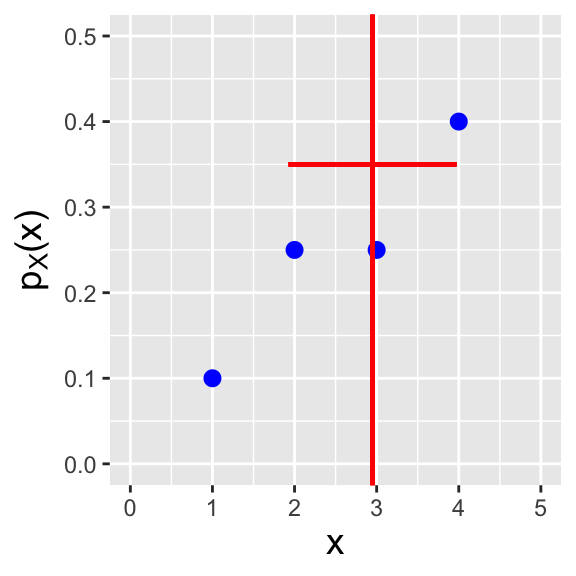
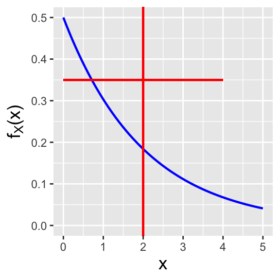
Both the expected value and variance are examples of moments of probability distributions. Moments represent elements of a distribution’s location and shape. In the end, moments are “just” expected values computed via the Law of the Unconscious Statistician, ones that are defined around the coordinate origin (\(E[X^k]\)), and ones that are defined around the distribution’s mean, \(\mu\) (\(E[(X-\mu)^k]\)). Other metrics used to describe a probability distribution, such as its skewness, are also related to moments. (One definition of skewness is Fisher’s moment coefficient: \(E[(X-\mu)^3]/\sigma^3\).)
1.7.1 Examples
1.7.1.1 Expected Value Tricks
The expected value operator \(E[X]\) has the following properties.
- If we multiply \(X\) by a constant \(a\), that constant can be moved out of the operator, i.e., \[ E[aX] = aE[X] \,. \]
- The expected value of a constant is simply that constant, i.e., \[ E[b] = b \,. \]
- The expected value operator is a linear operator, which means that we can split it at \(+\)’s and \(-\)’s, with the sign being preserved: \[ E[aX - b] = E[aX] - E[b] = aE[X] - b \,. \]
If, for example, we define a random variable \(Y = 10X - 5\) and we know that \(E[X] = 4\), then we can write that \(E[Y] = 10E[X] - 5 = 35\).
Note that we have said nothing about \(E[XY]\) here. In general, we cannot simplify this expression at all, unless \(X\) and \(Y\) are independent random variables (a concept we haven’t discussed yet), in which case \(E[XY] = E[X]E[Y]\).
1.7.1.2 Variance Tricks
The variance operator \(V[X]\) has the following properties.
- If we multiply \(X\) by a constant \(a\), that constant can be moved out of the operator, but it is then squared, i.e., \[ V[aX] = a^2V[X] \,. \]
- The variance of a constant is zero: \[ V[b] = 0 \,. \]
- The variance operator is a linear operator, which means that we can split it at \(+\)’s and \(-\)’s, with all signs becoming positive: \[ V[aX - b] = V[aX] + V[b] = a^2V[X] + 0 = a^2V[X] \,. \]
If, again, \(Y = 10X - 5\), and if \(V[X] = 2\), then \(V[Y] = 100V[X] = 200\).
1.7.1.3 The Shortcut Formula for Variance
Above, we indicate that \[ V[X] = E[(X-\mu)^2] = E[X^2] - (E[X])^2 \,. \] This is the so-called shortcut formula for determining the variance of a distribution. We can derive it as follows, making use of the “tricks” we show above: \[\begin{align*} V[X] = E[(X-\mu)^2] &= E[X^2 - 2X\mu + \mu^2] ~~\mbox{(expand)} \\ &= E[X^2] - E[2X\mu] + E[\mu^2] ~~\mbox{(split on + and -)} \\ &= E[X^2] - 2\mu E[X] + \mu^2 ~~\mbox{(slide constants out)}\\ &= E[X^2] - 2(E[X])^2 + (E[X])^2 = E[X^2] - (E[X])^2 \,, \end{align*}\] where in the last line we make use of the fact that \(E[X] = \mu\). Note what this shortcut formula means: it means that to compute a variance, it is sufficient to compute both \(E[X]\) and \(E[X^2]\) and combine the results. It also means that if we are given any two of the quantities \(E[X]\), \(E[X^2]\), and \(V[X]\), we can immediately derive the third one.
1.7.1.4 The Expected Value and Variance of a Probability Density Function
In the last section, we define the pdf \[ f_X(x \vert \theta) = \left\{ \begin{array}{cl} \theta x^{\theta-1} & 0 \leq x \leq 1 \\ 0 & \mbox{otherwise} \end{array} \right. \,, \] For this pdf, the expected value is \[ E[X] = \int_0^1 x f_X(x) dx = \int_0^1 \theta x^\theta dx = \frac{\theta}{\theta+1} \left. x^{\theta+1} \right|_0^1 = \frac{\theta}{\theta+1} \,. \] As for the variance, we utilize the shortcut formula, which means that we compute \(E[X^2]\) first: \[ E[X^2] = \int_0^1 x^2 f_X(x) dx = \int_0^1 \theta x^{\theta+1} dx = \frac{\theta}{\theta+2} \left. x^{\theta+2} \right|_0^1 = \frac{\theta}{\theta+2} \,. \] Hence the variance is \[ V[X] = E[X^2] - (E[X])^2 = \frac{\theta}{\theta+2} - \frac{\theta^2}{(\theta+1)^2} = \frac{\theta}{(\theta+2)(\theta+1)^2} \,. \]
We see that the value for our new pdf is similar: 0.643.
1.8 Probability Distributions: Working with R
What to take away from this section:
The programming language
Ris a tool by which the reader can, e.g.,visualize probability mass and density functions; and
utilize numerical integration to carry out probability calculations.
In this section, we introduce R as a tool with which to, e.g., visualize and numerically manipulate probability distributions.
We start with the concept of the vector:
Code
x <- c("Hello, world!")(The reader should feel free to open R and type in these lines at the Console prompt.) In this example, we define a vector of character strings which we name x; here, x has length 1:
Code
length(x)[1] 1c() is an R function whose arguments (e.g., "Hello, world!") are what are to be the constituents of the vector. The arrow is an assignment operator; = is equally valid. We can create a numeric vector as follows:
Code
x <- c(1, 2, 4, 8)
print(x)[1] 1 2 4 8Code
length(x)[1] 4but when the numbers follow a (long) sequence, it can be easier to utilize seq():
Code
x <- seq(0, pi, by = 0.01) # 0, 0.01, 0.02, ..., 3.14 (but not 3.15)
# pi and Inf are built-in constants
length(x)[1] 315When it comes to probability distributions, what might we want to do first?
Let’s suppose that our data are sampled from this pdf: \[
f_X(x) = \left\{ \begin{array}{cl} c x \sin x & 0 \leq x \leq \pi \\ 0 & \mbox{otherwise} \end{array} \right. \,,
\] \(c\) is a normalization constant, meaning it has some value (to be determined) such that the integral of \(f_X(x)\) from 0 to \(\pi\) is 1. Below, we will show how we can determine the value of \(c\) using R code. But first, we will assume \(c = 1\) and determine if \(f_X(x)\) is non-negative (as it should be!):
Code
x <- seq(0, pi, by = pi / 100)
f.x <- x * sin(x)
min(f.x)[1] 0Note how we do not have to use a for-loop here, as one of the hallmarks of R is vectorization: if R sees that x is a vector, it will work with the vector directly and thus f.x will itself be a vector with the same length as x (and with the first element of x corresponding to the first element of f.x, etc.). We see that the minimum value is 0.
If we want to go further, we can make a simple plot (see Figure 1.13):
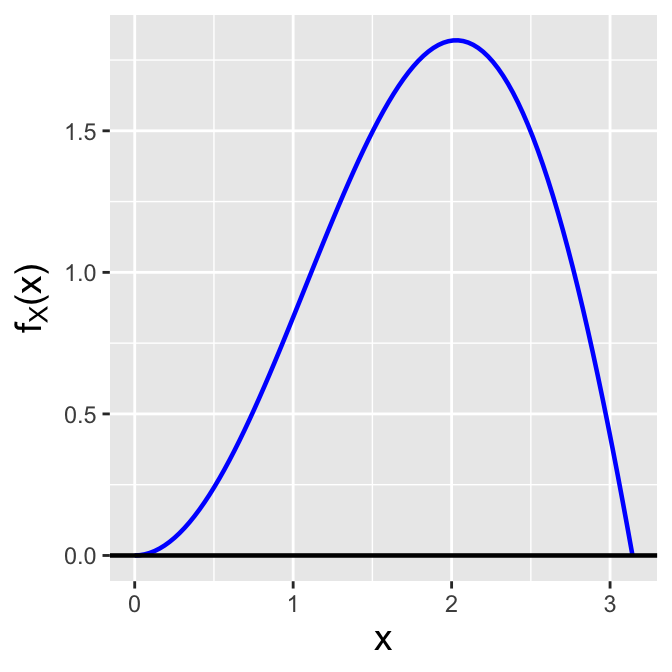
The ggplot() function puts x on the \(x\)-axis and f.x on the \(y\)-axis. We then connect each point with a line (geom_line()), make the line blue (col = "blue"), overlay a horizontal red line at \(y = 0\) (geom_hline(), with yintercept = 0), and change the default \(y\)-axis label to one that includes the subscript “X” (labs()).
The next step is to determine the normalization constant. Let’s suppose that we have forgotten integration by parts and thus we are not sure how to integrate \(f_X(x)\). We can code numerical integration in R using a combination of a function that evaluates \(f_X(x)\) and a call to the built-in function integrate(), which performs numerical integration:
Code
f <- function(x) {
return(x * sin(x))
}
integrate(f, 0, pi) # integrate the function f between 0 and pi3.141593 with absolute error < 3.5e-14We see that the integral is \(\pi\), so to make the pdf valid, we have to set \(c\) to \(1/\pi\): \[ f_X(x) = \left\{ \begin{array}{cl} \frac{1}{\pi} x \sin x & 0 \leq x \leq \pi \\ 0 & \mbox{otherwise} \end{array} \right. \,. \]
Let’s suppose we sample data from this distribution. What is the probability that the next observed datum will have a value between 1 and 2? We can use integrate to figure that out:
Code
f <- function(x) {
return(x * sin(x) / pi) # we now include the normalization constant
}
integrate(f, 1, 2) # integrate the function f between 1 and 20.4585007 with absolute error < 5.1e-15The answer is 0.4585…there is a 45.85% chance that the next datum will have a value between 1 and 2.
What is the expected value, \(E[X]\), of \(f_X(x)\)?
Code
f <- function(x) {
return(x^2 * sin(x) / pi) # add an additional x
}
integrate(f, 0, pi)1.868353 with absolute error < 2.1e-14The expected value is 1.868. Given the appearance of the pdf, this number makes sense.
1.8.1 Examples
1.8.1.1 Numerical Integration and Conditional Probability
Let’s suppose that we would like to numerically evaluate \[ P(1 \leq X \leq 2 \vert X > 0.5) = \frac{P(1 \leq X \leq 2 \cap X > 0.5)}{P(X > 0.5} = \frac{P(1 \leq X \leq 2)}{P(X > 0.5} \,. \] As we have already defined At first, it would appear that all we have to do is to call
integrate()twice
Code
f <- function(x) {
return(x * sin(x) / pi)
}
integrate(f, 1, 2) / integrate(f, 0.5, pi)However, this will not work, since
integrate()returns a list, not a single numerical value. So we have to figure out where the value of the integral value is stored:
Code
names(integrate(f, 1, 2)) # return the names of each list element[1] "value" "abs.error" "subdivisions" "message" "call" What we want is
value. To reference the value directly, we use a dollar sign, as shown here:
Code
integrate(f, 1, 2)$value / integrate(f, 0.5, pi)$value[1] 0.3836833Done. Our conditional probability is 0.4645.
1.8.1.2 Numerical Integration and Variance
Above, we compute the expected value of \(f_X(x)\). For the variance, we adapt the same code to compute \(E[X^2]\), then utilize the shortcut formula:
Code
f <- function(x) {
return(x^2 * sin(x) / pi) # same code as above
}
E.X <- integrate(f, 0, pi)$value
f <- function(x) {
return(x^3 * sin(x) / pi) # add one more power of x
}
V.X <- integrate(f, 0, pi)$value - E.X^2
V.X [1] 0.3788611Code
sqrt(V.X)[1] 0.6155169The variance is 0.379 and the standard deviation is 0.616. We interpret these numbers as saying that the majority of the observed data will lie between \(1.868 - 0.616 = 1.252\) and \(1.868 + 0.616 = 2.484\). If we recall introductory statistics, the proportion of values within one standard deviation of the mean for a normal distribution (i.e., a bell curve) is 0.683…but that value changes from distribution to distribution. What is the value here?
Code
f <- function(x) {
return(x * sin(x) /pi) # back to the original pdf
}
integrate(f, E.X - sqrt(V.X), E.X + sqrt(V.X))$value[1] 0.642609We see that the value for our new pdf is similar: 0.643.
1.9 Probability Distributions: Cumulative Distribution Function
What to take away from this section:
An alternative means by which to encapsulate the information contained in a probability distribution is the cumulative distribution function or cdf.
Foreshadowing: cumulative distribution functions play a fundamental role in statistical inference, particularly when we construct confidence intervals and perform hypothesis tests.
A cumulative distribution function (a cdf) is another means by which to mathematically express a probability distribution, which is to say, if we have a cdf, we can derive the associated pmf/pdf and vice-versa. A cdf is, in the discrete case, a sum of probability masses that lie to the left of a chosen coordinate \(x\) on the real-number line, \[ F_X(x) = \sum_{y \leq x} p_Y(y) \,, \] while in the continuous case it is an integral of the probability density that lies to the left of \(x\): \[ F_X(x) = \int_{y \leq x} f_Y(y) dy \,. \] In both cases, we utilize a dummy variable for the pmf/pdf itself because \(x\) is the upper limit of summation/integration. See Figure 1.14, which illustrates how a cdf “collects” all the probability masses or density “to the left” of a given value of \(x\). Given this figure, it should be clear that \(F_X(-\infty) = 0\) (there is nothing to collect “to the left” of \(-\infty\)) and \(F_X(\infty) = 1\) (since, by the time we reach \(x = \infty\), all masses or density have been collected). Another thing to keep in mind is that even if a random variable is discrete, its associated cdf \(F_X(x)\) is continuously valued, because it is defined at all values of \(x\) (although it is technically not “mathematically continuous” due to the steps that \(F_X(x)\) takes at each value of \(x\) where there is a probability mass).
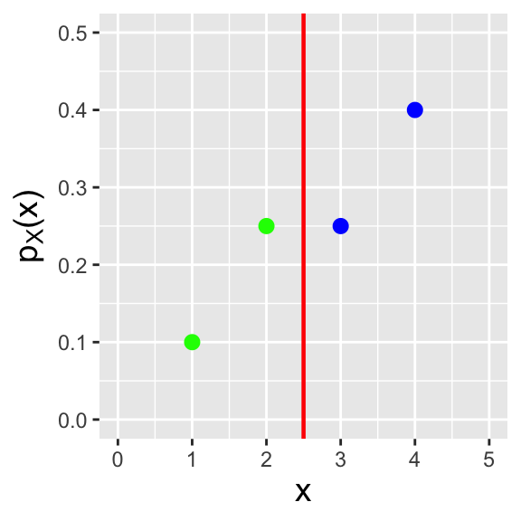
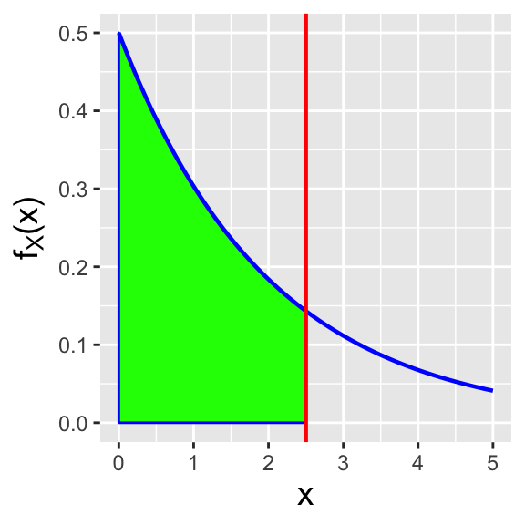
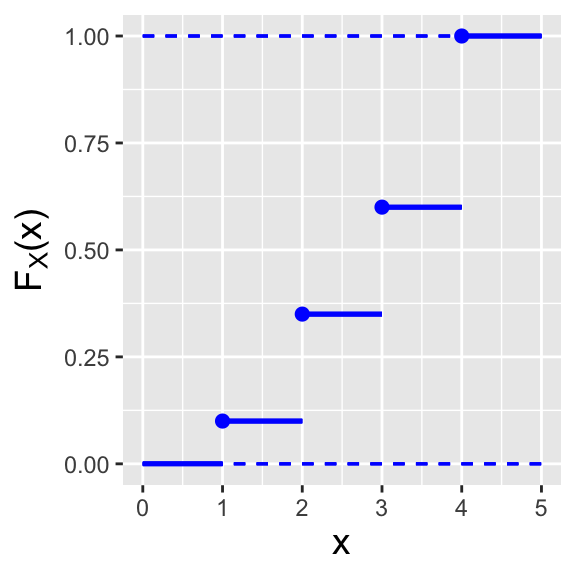
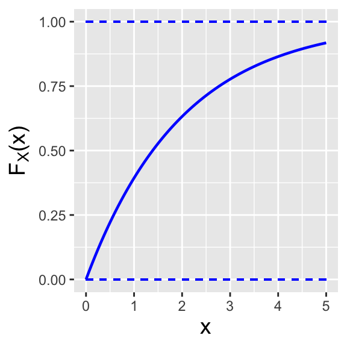
A cdf is useful to have when our goal is to compute the probability of that the value of a sampled random variable lies between \(x = a\) and \(x = b\). For the case of a continuous random variable, \[ P(a < X < b) = F_X(b) - F_X(a) \,. \] As we can see, if we have the cdf, we do not need to perform integration to compute the probability…we just plug in coordinate values. (Note that the form of the inequality, i.e., whether we have \(<\) or \(\leq\), does not matter.) However, when we are dealing with a discrete random variable, we need to tread far more carefully, because the form of the inequality can matter. Let’s suppose we have a pmf with masses given at \(x = \{0,1\}\). Then, e.g., \[\begin{align*} P(0 \leq X \leq 1) &= \sum_{x \in [0,1]} p_X(x) = p_X(0) + p_X(1) = F_X(1) \\ P(0 < X \leq 1) &= \sum_{x \in (0,1]} p_X(x) = p_X(1) = F_X(1) - F_X(0) \\ P(0 < X < 1) &= \sum_{x \in (0,1)} p_X(x) = 0 \,. \end{align*}\]
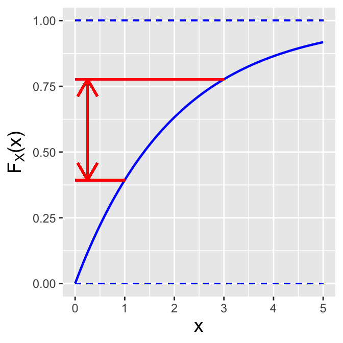
We will make two final points here about cdfs.
First, as indicated above, given a cdf, we can find the associated pmf/pdf. If a pmf has non-zero masses at values \(x - \Delta x\) and \(x\), and none in between, then \[ p_X(x) = F_X(x) - F_X(x-\Delta x) \,, \] while in the continuous case, \[ f_X(x) = \frac{d}{dx}F_X(x) \,, \] assuming \(F_X(x)\) is differentiable at \(x\).
Second, we can define an inverse cumulative distribution function, or inverse cdf. The inverse cdf takes as input the total probability collected to the left of \(x\) (e.g., the green region shown in the right panel of Figure 1.14) and returns the associated value of \(x\). In other words, if \(q = F_X(x)\), then \(x = F_X^{-1}(q)\).
One issue that arises with the inverse cdf is that if \(F_X(x)\) is not strictly monotonically increasing (i.e., if for some range of values, \(\frac{d}{dx}F_X(x) = 0\)) then there is no unique inverse. For instance, see the left panel of Figure 1.15: if we input \(F_X(x) = 0.35\), then \(x \in [2,3)\). We can circumvent this issue by utilizing the generalized inverse cdf instead, for which \[
x = F_X^{-1}(q) = \mbox{inf}\{ x : F_X(x) \geq q \} \,.
\] The symbol “inf” indicates that we are finding the infimum, or smallest value, of the indicated set of values. Here, the output \(x\) is the smallest value for which \(F_X(x) \geq q\) holds. For our given example, \(x = 2\). On the other hand, if we pick a value of \(F_X(x)\) that lies between the steps, we would choose the smallest \(x\) value associated with the next higher step. For instance, if for our example we want the inverse cdf for \(F_X(x) = 0.5\), which lies between the steps at 0.35 and 0.6, we would take the smallest value of \(x\) associated with \(F_X(x) = 0.6\), which is \(x = 3\). (Note that R utilizes the generalized form of the inverse cdf.)
1.9.1 Examples
1.9.1.1 The Cumulative Distribution Function for a Probability Density Function
We work again with our simple parameterized pdf: \[ f_X(x \vert \theta) = \left\{ \begin{array}{cl} \theta x^{\theta-1} & 0 \leq x \leq 1 \\ 0 & \mbox{otherwise} \end{array} \right. \,. \] The cdf for this function is simply the integral of the pdf “to the left” of the coordinate \(x\): \[ F_X(x \vert \theta) = \int_0^x f_Y(y \vert \theta) dy \,. \] Because the upper bound of the integral is \(x\), we replace \(x\) in the integrand with a dummy variable. (Here, \(y\) was chosen arbitrarily.) Thus \[ F_X(x \vert \theta) = \int_0^x \theta y^{\theta-1} dy = \left. y^\theta \right|_0^x = x^\theta \,. \] We can answer a variety of questions given this cdf. For example…
- What is the median of this distribution?
The median \(\tilde{x}\) is the point on the real-number line where \[ P(X \leq \tilde{x}) = \frac{1}{2} \,. \] For our distribution, \[ \tilde{x}^\theta = \frac{1}{2} ~\Rightarrow~ \tilde{x} = \left( \frac{1}{2} \right)^{1/\theta} \,. \]
- Now let \(\theta = 3\). What is the probability of sampling a datum between \(x = 1/4\) and \(x = 3/4\)? \[\begin{align*} P\left(\frac{1}{4} \leq X \leq \frac{3}{4}\right) &= F_X\left(\frac{3}{4} \vert \theta=3\right) - F_X\left(\frac{1}{4} \vert \theta=3\right)\\ &= \left(\frac{3}{4}\right)^3 - \left(\frac{1}{4}\right)^3 = \frac{26}{64} = \frac{13}{32} \,. \end{align*}\]
1.9.1.2 Visualizing the Cumulative Distribution Function in R
We continue with the pdf we use above, with \(\theta = 3\). To show the region being integrated over to compute a cdf value, for say \(x = 0.6\), we utilize
R’spolygon()function. (See Figure 1.17.)
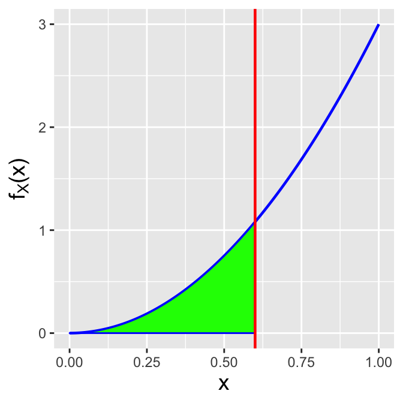
What is happening in this code chunk? We first define a sequence of values for
x(viaseq()), then compute the pdf for eachxvalue (f.x). We then define a data frame withxandf.xas columns, and determine which rows correspond to values ofxthat are less than or equal to 0.6 (viasubset()). To create the polygon, we pass the subset data framedf.shadeto the functiongeom_area().
If we wish to visualize the full cdf, we can do the following. (See Figure 1.18.)
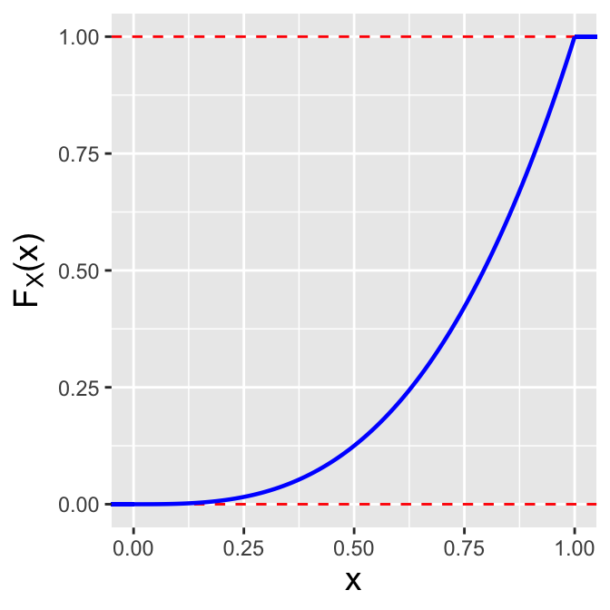
1.9.1.3 The CDF for a Mathematically Discontinuous Distribution
Assume that we are handed the following pdf: \[ f_X(x \vert \theta) = \left\{ \begin{array}{cl} 1/2 & 0 \leq x \leq 1 \\ 2-x & 1 \leq x \leq 2 \\ 0 & \mbox{otherwise} \end{array} \right. \,, \] which we display in Figure 1.19.
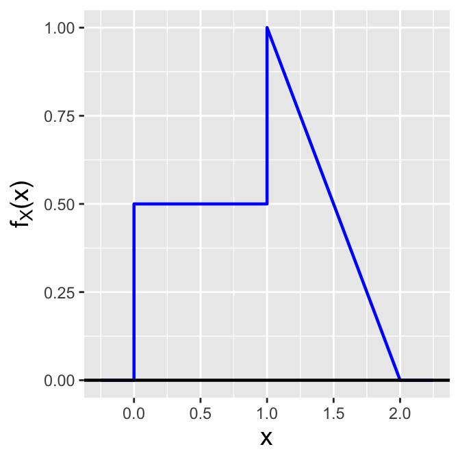
This is a completely valid, “continuous” pdf that has a mathematical discontinuity at \(x = 1\). What is the cdf for this function?
The key insight is that we should not try to evaluate the integral of \(f_X(x)\) from 0 to \(x\) when \(x > 1\) with a single integral…this will not work! We simply have to break the problem up so as to define the cdf over the domain [0,1), and then over the domain [1,2]. \[\begin{align*} F_X(x \vert x < 1) &= \int_0^x f_Y(y) dy = \frac{1}{2} \int_0^y dy = \frac{x}{2} \\ F_X(x \vert x \geq 1) &= \int_0^1 f_Y(y) dy + \int_1^x f_Y(y) dy = \left. \frac{y}{2} \right|_0^1 + \int_1^x (2-y) dy\\ &= \frac{1}{2} - \left. \frac{(2-y)^2}{2} \right|_1^x \\ &= \frac{1}{2} - \left( \frac{(2-x)^2}{2} - \frac{1}{2} \right) = 1 - \frac{(2-x)^2}{2} \,. \end{align*}\] (Not sure if this is right? We can at the very least do sanity checking, as we know \(F_X(1) = 1/2\) and \(F_X(2) = 1\)…and our formula produces these results! Alternatively, we can take the derivative of \(F_X(x)\) and see if it matches \(f_X(x)\).) We display the cdf in Figure 1.20.
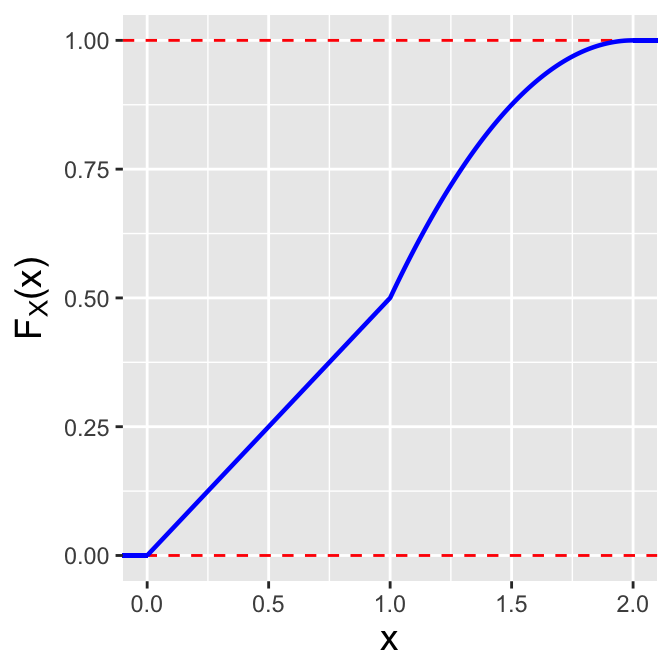
1.10 The Law of Total Probability
What to take away from this section:
- When a parameter of a probability distribution is not actually a constant, but is itself a random variable, we utilize the law of total probability so as to determine the distributions of observed data irrespective of the sampled value of the parameter.
One of the laws of probability that we introduce in Section 1.4 is the Law of Total Probability, or LoTP: if we partition a sample space \(\Omega\) into \(k\) disjoint events \(\{B_1,\ldots,B_k\}\), then for any event \(A\) we can write \[ P(A) = \sum_{i=1}^k P(A \vert B_i) P(B_i) \,. \] We are in a position now, having introduced random variables and probability distributions, to update how we think of this law: it can express the probability of a random variable \(X\) when it is sampled from a discrete distribution with parameter \(\theta\)…and when \(\theta\) itself is not a fixed constant (as it has been up until now), but is itself a discrete random variable. To see this, let’s rewrite the LoTP given this description: \[ p_X(x) = \sum_\theta p_{X \vert \theta}(x \vert \theta) p_{\Theta}(\theta) \,. \] This equation is saying that the probability mass associated with the coordinate \(x\) is the value of the mass for \(x\), given the value \(\theta\), weighted by the probability that we would even observe the value \(\theta\) in the first place. Or, that \(p_X(x)\) is a weighted average of the values of the conditional distribution \(p_{X \vert \theta}(x \vert \theta)\), where the weights are given by \(p_{\Theta}(\theta)\).
What if \(\theta\) is actually a continuous random variable? We can extend the LoTP to handle that possibility by replacing the summation over a discrete random variable with an integral over a continuous one: \[ p_X(x) = \int_\theta p_{X \vert \theta}(x \vert \theta) f_{\Theta}(\theta) d\theta \,. \] And what if the distribution of \(X \vert \theta\) is continuous? We would just replace the \(p_X\) and the \(p_{X \vert \theta}\) in the equations above with \(f_X\) and \(f_{X \vert \theta}\), i.e., we would use the LoTP to define a probability density instead of a probability mass.
1.10.1 Examples
1.10.1.1 The LoTP With Two Simple Discrete Distributions
Let’s suppose we have two random variables \(X\) and \(Y\), where the probability mass function for \(Y\) is
| \(y\) | \(p_Y(y)\) |
|---|---|
| 0 | 2/3 |
| 1 | 1/3 |
and where, if \(Y = 0\), the pmf for \(X\) is
| \(x \vert y=0\) | \(p_{X \vert Y}(x \vert y=0)\) |
|---|---|
| 0 | 4/5 |
| 1 | 1/5 |
and if \(Y = 1\) the pmf for \(X\) is
| \(x \vert y=1\) | \(p_{X \vert Y}(x \vert y=1)\) |
|---|---|
| 0 | 3/5 |
| 1 | 2/5 |
What is the pmf \(p_X(x)\)?
The Law of Total Probability tells us that \[ p_X(x) = \sum_y p_{X \vert Y}(x \vert y) p_{Y}(y) \,, \] so \[\begin{align*} p_X(0) &= p_{X \vert Y}(0 \vert 0) p_{Y}(0) + p_{X \vert Y}(0 \vert 1) p_{Y}(1) = \frac{4}{5} \cdot \frac{2}{3} + \frac{3}{5} \cdot \frac{1}{3} = \frac{11}{15} \\ p_X(1) &= p_{X \vert Y}(1 \vert 0) p_{Y}(0) + p_{X \vert Y}(1 \vert 1) p_{Y}(1) = \frac{1}{5} \cdot \frac{2}{3} + \frac{2}{5} \cdot \frac{1}{3} = \frac{4}{15} \,. \end{align*}\] The pmf is thus
| \(x\) | \(p_X(x)\) |
|---|---|
| 0 | 11/15 |
| 1 | 4/15 |
The masses sum to 1, so indeed this is a proper pmf.
1.10.1.2 The Law of Total Expectation
If we inspect the tables above, we see that, e.g., \[\begin{align*} E[X \vert Y=0] &= 0 \cdot \frac{4}{5} + 1 \cdot \frac{1}{5} = \frac{1}{5} \,. \end{align*}\] A similar calculation yields \(E[X \vert Y=1] = 2/5\). What then is the expected value of \(X\) itself?
A result related to the Law of Total Probability is the Law of Total Expectation (LoTE), which states that when \(Y\) is finite and countable, \[ E[X] = E[E[X \vert Y]] = \sum_y E[X \vert Y=y] ~ p_Y(y) \,, \] i.e., the overall expected value is a weighted average of the individual values \(E[X \vert Y=y]\). Here, the LoTE yields \[ E[X] = \frac{1}{5} \cdot \frac{2}{3} + \frac{2}{5} \cdot \frac{1}{3} = \frac{4}{15} \,. \]
1.10.1.3 The LoTP With Two Continuous Distributions
Let’s suppose that we have two random variables, \(X\) and \(\theta\), such that \[\begin{align*} f_{X \vert \Theta}(x \vert \theta) &= \theta \exp(-\theta x) \\ f_{\Theta}(\theta) &= \exp(-\theta) \,, \end{align*}\] for \(x \in [0,\infty)\) and \(\theta > 0\). What is \(f_X(x)\)?
As mentioned above, the primary change to the LoTP would be that we use integrate over all possible values of \(\theta\), rather than sum, so the LoTP looks like this: \[ f_X(x) = \int_0^\infty f_{X \vert \Theta}(x \vert \theta) f_{\Theta}(\theta) d\theta \,. \] Now that we’ve established this equation, the rest is math…except as we’ll see, we need to use integration by parts. \[\begin{align*} f_X(x) &= \int_0^\infty \theta \exp(-\theta x) \exp(-\theta) d\theta \\ &= \int_0^\infty \theta \exp(-\theta (x+1)) d\theta \,. \end{align*}\] We set up the integration as follows: \[\begin{align*} u = \theta ~~~ & ~~~ dv = \exp(-\theta (x+1)) d\theta \\ du = d\theta ~~~ & ~~~ v = -\frac{1}{x+1}\exp(-\theta (x+1)) \,. \end{align*}\] Then \[\begin{align*} f_X(x) &= \left.(u v)\right|_0^\infty - \int_0^\infty v du \\ &= -\left.\frac{\theta}{x+1}\exp(-\theta (x+1))\right|_0^\infty + \int_0^\infty \frac{1}{x+1}\exp(-\theta (x+1)) d\theta \\ &= 0 + \int_0^\infty \frac{1}{x+1}\exp(-\theta (x+1)) d\theta \,. \end{align*}\] (We will stop here momentarily to remind the reader that when we evaluate an expression of the form \(x e^{-x}\), the result as \(x \rightarrow \infty\) is zero because \(e^{-x} \rightarrow 0\) faster than \(x \rightarrow \infty\). We now carry on…) \[\begin{align*} f_X(x) &= \int_0^\infty \frac{1}{x+1}\exp(-\theta (x+1)) d\theta \\ &= \left. -\frac{1}{(x+1)^2} \exp(-\theta (x+1)) \right|_0^\infty \\ &= \frac{1}{(x+1)^2} \,, \end{align*}\] for \(x \in [0,\infty)\). Done. We will leave it as an exercise to the reader to confirm that \(f_X(x)\) is a valid pdf that integrates to one.
Above, we say that “we need to use integration by parts.” This is not quite true. A handy result that we will utilize as the book goes on is that \[ \Gamma(t) = \int_0^\infty u^{t-1} \exp(-u) du \,. \] This is the gamma function. (The symbol \(\Gamma\) represents a capital gamma.) One of the properties that makes this function useful is that when \(x\) is a non-negative integer, the gamma function is related to the factorial function: \(\Gamma(x) = (x-1)! = (x-1) (x-2) \cdots 1\). But the reason why the gamma function is useful here is that we can use it to avoid integration by parts.
Our integral is \[ f_X(x) = \int_0^\infty \frac{1}{x+1}\exp(-\theta (x+1)) d\theta \,. \] To solve this, we implement variable substitution. The three steps of variable substitution are
- to write down a viable substitution \(u = g(\theta)\);
- to then derive \(du = h(u,\theta) d\theta\); and finally
- to use \(u = g(\theta)\) to transform the bounds of the integral.
For our integral \[ (1) ~~ u = (x+1)\theta ~~ \implies ~~ (2) ~~ du = (x+1)d\theta \] and \[ (3) ~~ \theta = 0 ~\implies~ u = 0 ~~~ \mbox{and} ~~~ \theta = \infty ~\implies~ u = \infty \,, \] We see from point (3) that making the variable substitution will not affect the bounds of the integral. Thus we have that \[\begin{align*} f_X(x) &= \int_0^\infty \frac{1}{x+1}\exp(-u) \frac{du}{x+1} \\ f_X(x) &= \frac{1}{(x+1)^2} \int_0^\infty u^0 \exp(-u) du \\ f_X(x) &= \frac{1}{(x+1)^2} \Gamma(1) = \frac{1}{(x+1)^2} 0! = \frac{1}{(x+1)^2} \,. \end{align*}\] (Here, we utilize the fact that zero factorial is one.)
1.11 Data Sampling
What to take away from this section:
If we want to create datasets via simulation, we can either…
utilize an existing
Rcode; or, if such a code does not exist,create our own
Rcode in which we implement inverse-transform or rejection sampling (with the former being preferred)
One of the primary uses of R is to perform simulations in which we repeatedly create mock datasets and analyze them. A natural first question would then be: how do we create such datasets?
Below, we will describe two methods for randomly sampling data given a probability distribution. The first, rejection sampling, is appropriate to use when we cannot work with the cumulative distribution function of the assumed distribution analytically (i.e., with pencil and paper). As we will see, rejection sampling is (relatively) computationally inefficient, but it does have the benefit that we can apply it in just about any sampling situation. The second method, inverse transform sampling, is efficient and should always be our first choice when the cdf is tractable. To head off a question the reader may have: no, we do not always have to hand-code samplers when working in R…for commonly used distributions, R supplies “wrapper functions” that effectively abstract away the details of inverse transform sampling. However, knowing how to code a sampler is a good skill to have!
Let’s suppose we are working with one of the pdfs that we define above: \[ f_X(x) = \left\{ \begin{array}{cl} \frac{1}{\pi} x \sin x & 0 \leq x \leq \pi \\ 0 & \mbox{otherwise} \end{array} \right. \,, \] The cdf for this distribution is \[ F_X(x) = \frac{1}{\pi}\left( \sin x - x \cos x \right) \,, \] which is not easily inverted. Thus to sample data from this distribution, we utilize the following algorithmic steps.
- Determine the range of values over which we will sample data values: \([x_{lo},x_{hi}]\). Nominally this will be the domain of the distribution, but sometimes that’s not viable, such as when the domain is semi- or fully infinite. (Here, the range is easily specified: \([0,\pi]\).)
- Within \([x_{lo},x_{hi}]\), determine the maximum value of \(f_X(x)\). (For our assumed distributione, this is not necessarily a simple calculation, as the derivative of \(f_X(x)\) is \((\sin x + x \cos x)/\pi\). We can solve for the root using, e.g.,
R’suniroot()function:
Code
f <- function(x)
{
(sin(x) + x * cos(x)) / pi
}
uniroot(f, interval = c(0.01, pi))$root[1] 2.028758This looks for the root of the given function within the stated interval; since there is a root at 0, corresponding to a functional minimum, we exclude that point by setting the interval lower bound to 0.01. uniroot() is an extremely useful function and we will see it again throughout the rest of this book. The root is \(x_{max} = 2.0288\) and \(f_X(x_{max}) = 0.5792\).) 3. We repeat the following steps until we reach our target sample size \(n\): (a) sample a random number \(u\) assuming uniform weighting between \(x_{lo}\) and \(x_{hi}\); (b) sample another random number \(v\) assuming uniform weighting between 0 and \(f_X(x_{max})\); and (c) keep \(u\) as part of our sample if \(v \leq f_X(u)\). (a) and (b) are summed up by the statement “draw a rectangle whose vertices are \((x_{lo},0)\), \((x_{hi},0)\), \(x_{hi},f_X(x_{max}))\), and \(x_{lo},f_X(x_{max}))\) and pick a random point inside the rectangle,” while (c) is summed up by saying “keep the random point if it lies below \(f_X(x)\).” Note that we will assume that at the very least, we can use an R wrapper function to sample a numbers with uniform weighting; without this assumption, we would have to wade into the quagmire that is random number generation, which is well beyond the scope of this book!
In a code chunk and in Figure 1.21 we show how we sample \(n = 1000\) data sampled from our distribution, and the final result. (We dub the observed distribution the empirical distribution of the data, where “empirical” simply means “what we actually observe.”) Rejection sampling seems quick and easy…should we always use it when we are not already provided a sampling function for our pmf or pdf? No, not necessarily, because as noted above it is computationally inefficient: we might have to sample \(m \gg n\) points in order to populate a sample of size \(n\).
(We will also note here that this is the first time that we are running across the R function set.seed(). This initializes the underlying random number generator such that we generate the same numerical results every time we run the subsequent code…which is useful when doing analyses that we want to be reproducible. If we leave out set.seed(), then every time we run the subsequent code, we get a different data sample. The number that we pass to set.seed() can be anything…we adopt 101 here, but it can any real number.)
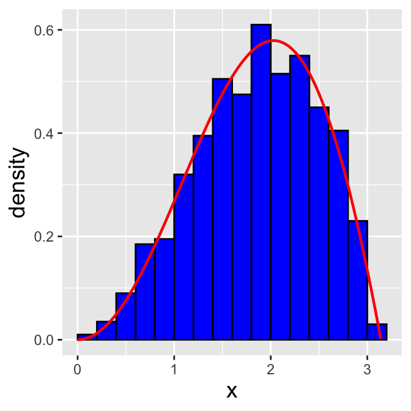
A primary alternative to rejection sampling is inverse transform sampling, in which we utilize the inverse cdf function to generate appropriately distributed data. Inverse transform sampling is efficient in that every proposal point is kept.
Let’s suppose we are working with the pdf: \[ f_X(x) = \theta x^{\theta-1} \,, \] where \(\theta > 0\) and \(x \in [0,1]\). The inverse cdf, as derived in an example above, is \(F_X^{-1}(q) = q^{1/\theta}\). Inverse transform sampling utilizes the following algorithmic steps.
- Pick the target sample size \(n\).
- Sample \(n\) data with uniform weighting between 0 and 1. These are the cdf bounds. Call these data \(q\).
- Transform the data \(q\) to be \(x = F_X^{-1}(q)\).
In a code chunk and in Figure 1.22 we display our inverse-transform sampling code as well as the empirical distribution of \(n = 1000\) data sampled from our distribution (assuming \(\theta = 3\)). We note that the code to generate our sample is much simpler than the code needed to perform rejection sampling!
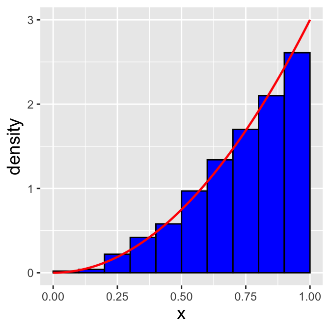
1.11.1 Example
1.11.1.1 More Inverse-Transform Sampling
Let’s suppose that we are to sample \(n\) data from the following distribution: \[ f_X(x) = 2(1-x) ~~~ x \in [0,1] \,. \] Can we do this via inverse-transform sampling? The answer is yes, if (a) we can derive the cdf \(F_X(x)\), and (b) we can invert it. Here, \[\begin{align*} F_X(x) &= \int_0^x f_V(v) dv = \int_0^x 2(1-v) dv\\ &= \left. -(1-v)^2 \right|_0^x = -(1-x)^2 - (-1) = 1 - (1-x)^2 \,. \end{align*}\] To invert the cdf, we set it equal to \(q\) and solve for \(x\): \[\begin{align*} q &= 1 - (1-x)^2 \\ \Rightarrow ~~~ 1 - q &= (1-x)^2 \\ \Rightarrow ~~~ \sqrt{1 - q} &= 1-x \\ \Rightarrow ~~~ x &= 1 - \sqrt{1 - q} \,. \end{align*}\] To check for the correctness of our inversion, we utilize a code like the one in the main body of the section above and compare our sampled data against the pdf. See Figure 1.23.
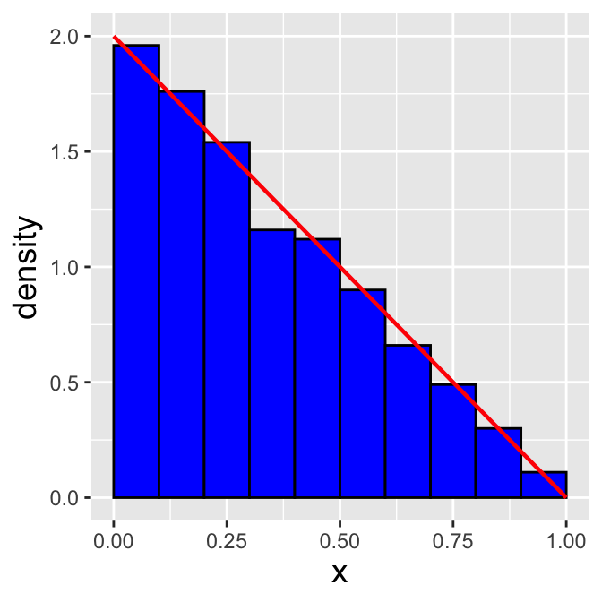
1.12 Statistics and Sampling Distributions
What to take away from this section:
A statistic is a function of observed data…
- …hence a statistic is a random variable
As a random variable, a statistic is sampled according to a sampling distribution, which despite the name is just a probability distribution with an associated mass or density function.
While the “width” of the mass or density function associated with an individual datum is dubbed the standard deviation, the analogous quantity for a sampling distribution is called the standard error.
Foreshadowing: if the observed data are sampled according to a probability distribution with a parameter \(\theta\), and if the value of \(\theta\) is unknown, then we would want to define a statistic that would help us infer the true value of \(\theta\), through…
point estimation;
confidence interval estimation; or
hypothesis testing.
Let’s say that we run an experiment in which we randomly sample many data from some distribution \(P\): \[ \mathbf{X} = \{X_1,X_2,\ldots,X_n\} \overset{iid}{\sim} P \,. \] The expected value for this distribution is \(E[X] = \mu\), while the variance is \(V[X] = \sigma^2\) (assumed to be finite).
So we have data…now what?
The answer, typically, is that we would use these data to infer the (unknown) properties of the population from which they are drawn. A simple picture of the experiment-and-infer cycle is given in Figure 1.24. Notice how in this figure we use the term “statistical inference.” (Fitting, as it is part of the name of this course!) This is an appropriate term to use because we utilize statistics when trying to infer the properties of the unknown underlying population, like its true mean \(\mu\). But this motivates a question: what exactly is a statistic?
1.12.1 Statistics
A statistic is simply a function of the data we observe. It can be any function of the data\(-\)e.g., \(X_1\), sin\((X_1) + \pi X_2\), etc.\(-\)and it provides a useful means by which to summarize data (i.e., reduce \(n\) numbers to a single number). But it should be intuitively obvious (we would hope!) that some statistics are going to be more informative than others: for instance, if we are trying to infer what \(\mu\) might be, \(X_1\) is probably going to be more useful to us than sin\((X_1) + \pi X_2\). But it may not (nay, will not) be the most useful quantity when the sample size \(n > 1\). We could say that much of what we do as statisticians is to pick appropriate (and optimal!) statistics to perform inference. (Which would be true, if not for all the data pre-processing, exploratory data analysis, coding, and interpretation we also do as part of the job.)
What are some common statistics?
- The sample mean: \[ \bar{X} = \frac{1}{n} \sum_{i=1}^n X_i \,. \] This is always useful for inferring a population mean. Why it is better than, e.g., \(X_1\) when \(n > 1\) will become more clear below. (Foreshadowing: there are metrics we can compute that provide numerical assessments of the usefulness of a statistic for performing inference. We introduce some of these metrics in the next section.)
- The sample variance: \[ S^2 = \frac{1}{n-1} \sum_{i=1}^n (X_1 - \bar{X})^2 \,. \] As we might guess, this one helps us infer population variances, and thus helps us make sense of the “width” of the pmf or pdf from which the data are sampled. The square root of \(S^2\) is the sample standard deviation. (One might ask: why \(n-1\)? Metrics, again…we will return to this point below when we discuss point estimation.)
- The sample range: \[ R = X_{(n)} - X_{(1)} \,. \] Here, we introduce a notational wrinkle: \(X_{(i)}\) represents the \(i^{\rm th}\) smallest datum. So \(X_{(1)}\) is the observed datum with the smallest value (but not necessarily the first one to be recorded in our experiment), and \(X_{(n)}\) is the one with the largest value. \(X_{(\cdot)}\) is dubbed an order statistic and we will illustrate its use as we go on, beginning in Section 3.5.
- There are a myriad of others: the interquartile range, the median, etc.
1.12.2 Sampling Distributions
We have stated what a statistic is: it is a function of the observed data. But what does this imply? It implies that statistics, which are functions of random variables, are themselves random variables, and thus are sampled from a pmf or pdf. It is convention to call the pmf or pdf associated with a given statistic the sampling distribution, but we are not necessarily fans of the term: it makes it sound like something new and different, when in reality a sampling distribution is just another pmf or pdf, with properties equivalent to those discussed earlier in the chapter (e.g., a sampling distribution has an expected value, a variance, etc.; see Section 1.6 and Section 1.7).
As we will see in the first example below, if the statistic is a linear function of random variables (like the sample mean), we can derive its expected value, variance, and standard error now given the tools we already have at our disposal. The term standard error simply refers to the standard deviation of a sampling distribution, i.e., \[ se[Y] = \sqrt{V[Y]} \,, \] where \(Y\) is our statistic. Now, can we go beyond this and derive the mathematical form of a statistic’s pmf or pdf now? The short answer is no…we have not yet introduced methods for deriving the functional forms of sampling distributions.
- In Section 2.3, we will introduce moment-generating functions, which can help us derive sampling distributions for linear functions of random variables (an example of which is the sample mean).
- In Section 3.5, we will show how one can write down the pmf or pdf for order statistics (like the sample median); once the sampling distribution is known, then we can derive its expected value and variance.
(As an aside, we should mention here the empirical rule. While nominally about the normal distribution, we will think of it as stating that nearly all statistics should be observed as laying within three standard errors of their population means. For instance, as we show below in an example, \(E[\bar{X}] = \mu\), so virtually all values of \(\bar{X}\), as observed over repetitions of an experiment, should lie in the range \([\mu - 3 \cdot se(\bar{X}),\mu + 3 \cdot se(\bar{X})]\), a range that gets smaller and smaller as the sample size \(n\) goes to infinity.)
There are, however, two paths that one could follow that allow us to build up an empirical sampling distribution for a statistic. The first assumes that we know (or are willing to assume) the pmf or pdf for the individual data: we would repeatedly simulate data from the distribution and record the values for the statistic. This builds off of the material in Section 1.11. (See the example below.) The other is useful for situations where we do not know nor are willing to assume the form of the pmf or pdf for the individual data…this is the bootstrap. We discuss the bootstrap technique in Section 4.6.1.
Many important results in statistical inference assume that we have collected a sample of \(n\) independent and identically distributed (or iid) random variables, so over the course of the rest of this chapter and for the next several, we will assume that when we have sampled two or more random variables, they will be iid random variables. (While the meaning of “identically distributed” should be intuitively clear to the reader, “independent” means that the value that we observe for one random variable will not affect the values we might observe for another random variable. We will discuss concepts related to simultaneously sampling values for two or more dependent random variables in Chapter 6.)
For more on sampling distributions, go to Section 2.3.
1.12.3 Examples
1.12.3.1 Expected Value and Variance of the Sample Mean (For All Distributions)
Given \(n\) iid data from some distribution, we can use the results from Section 1.7 to immediately show that \[\begin{align*} E[\bar{X}] &= E\left[\frac{1}{n}\sum_{i=1}^n X_i\right] = \frac{1}{n}E\left[\sum_{i=1}^n X_i\right] = \frac{1}{n}\sum_{i=1}^n E[X_i]\\ &= \frac{1}{n}\sum_{i=1}^n \mu = \frac{1}{n} n \mu = \mu \,, \end{align*}\] and \[\begin{align*} V[\bar{X}] &= V\left[\frac{1}{n}\sum_{i=1}^n X_i\right] = \frac{1}{n^2} V\left[\sum_{i=1}^n X_i\right] = \frac{1}{n^2} \sum_{i=1}^n V[X_i]\\ &= \frac{1}{n^2} n \sigma^2 = \frac{\sigma^2}{n} \,. \end{align*}\] The standard error for the sample mean is thus \(\sqrt{\bar{X}} = \sigma/\sqrt{n}\). There are two important conclusions to take away from this simple example. First, we never state the distribution from which we sample the initial data, so this is a general result that holds for all distributions. Second, we see that the width of the sampling distribution for the sample mean decreases as we collect more and more data, as \(1/\sqrt{n}\), meaning that any inferences that we make about the population mean will become more and more accurate as the sample size increases.
1.12.3.2 Simulation: Basic Algorithm
As we will see throughout this course, there will be times when we can analytically derive the sampling distribution for a statistic…and times when we cannot. When we cannot, but we know or can assume the distribution for each of the individual data, we can fall back upon simulations.
A basic simulation algorithm, rendered in pseudocode, looks like this:
set random number seed
set sample size and number of datasets, etc.
initialize vector(s) for storing result(s)
begin for-loop
sample dataset
compute statistic
compute and store result
end for-loop
optional: process result vector
display resultNote the “sample dataset”: this part of the algorithm utilizes either previously coded data samplers (e.g.,
rnorm()inR), or rejection or inverse-transform sampling as described above. Also note that while we indicate that we would embed our data sampler within afor-loop, we will often be able to leverageR’s vectorization facility and itsapply()function, which both shortens simulation code and makes it more computationally efficient (in terms of computation time).
We will apply the basic algorithm above in examples spread throughout the remainder of the book, starting immediately below.
1.12.3.3 Simulation: the Sampling Distribution of the Sample Mean
In a previous example, we use inverse-transform sampling to sample data from the pdf \(f_X(x) = 2(1-x)\) for \(x \in [0,1]\). Here, we extend the
Rcode so as to visualize the distribution of the sample mean of \(n = 10\) data drawn from this distribution.
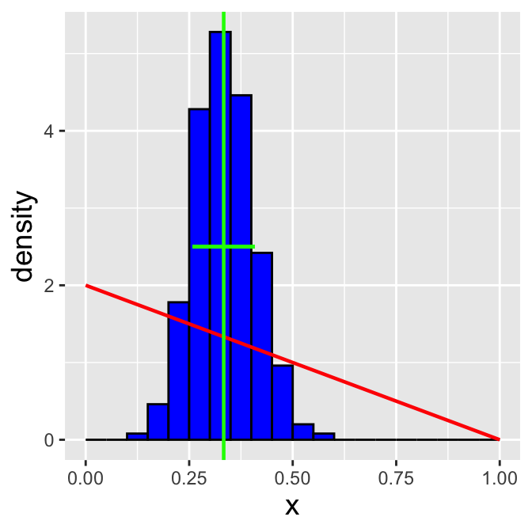
See Figure 1.25. The mean of the pdf is \[\begin{align*} E[X] &= \int_0^1 2x(1-x) dx = \int_0^1 2xdx - \int_0^1 2x^2dx\\ &= \left. x^2 \right|_0^1 - \left. \frac{2}{3}x^3 \right|_0^1 = 1 - \frac{2}{3} = \frac{1}{3} \,. \end{align*}\] This is indicated via the green vertical line in the figure. The variance is \[\begin{align*} V[X] &= E[X^2] - (E[X])^2 \\ &= \left[ \int_0^1 2x^2dx - \int_0^1 2x^3dx \right] - \left(\frac{1}{3}\right)^2 \\ &= \left(\frac{2}{3} - \frac{1}{2}\right) - \frac{1}{9} \\ &= \frac{1}{6} - \frac{1}{9} = \frac{1}{18} \,. \end{align*}\] The standard error for \(\bar{X}\) is thus \[ se(\bar{X}) = \sqrt{\frac{V[X]}{n}} = \sqrt{\frac{1}{180}} = 0.0745 \,. \] The range from the mean minus one standard error to the mean plus one standard error is indicated via the green horizontal line segment in the figure.
We observe that the distribution of the sample mean values matches the expected mean and standard error well, and is definitely different from the distribution of the individual data values (which is shown as the red line in the figure). The pdf for the sampling distribution looks almost like that of a normal distribution. For now we will have to content ourselves with only knowing the mean and the standard error of the sampling distribution distribution, and not the mathematical form of its pdf.
1.12.3.4 Simulation: the Sampling Distribution of the Sample Median
The median of a data sample is defined as the middle value of the sorted data: if we have \(n=5\) data, for instance, the median is \(x_{(3)}\). (Recall that the parentheses indicating that we are examining sorted data, with \(x_{(1)}\) and \(x_{(n)}\) being the smallest and largest observed values.) Here, we show how to simulate the distribution of a sample median. In Section 3.5, we show how we can attempt to derive distributions related to sorted data mathematically.
Let’s assume that we draw data according to the following distribution: \[ f_X(x) = \left\{ \begin{array}{cl} \frac{1}{\pi} x \sin x & 0 \leq x \leq \pi \\ 0 & \mbox{otherwise} \end{array} \right. \,, \] In the code chunk below, we display the estimated mean and standard error for the sampling distribution, while in Figure 1.26 we show the empirical distribution of the median values.
The empirical mean is 1.907 The empirical standard error is 0.255 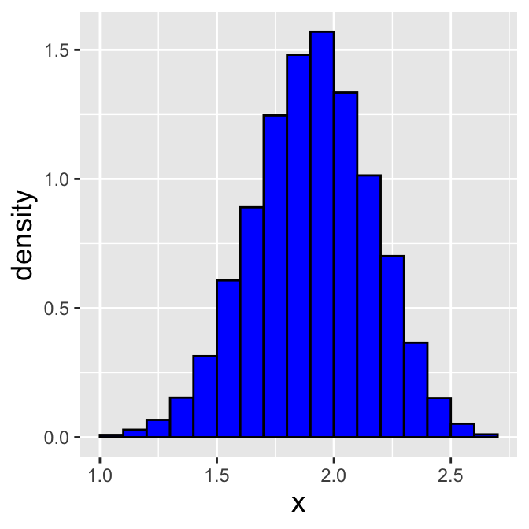
1.13 The Likelihood Function
What to take away from this section:
When we attempt to infer the true value of a distribution parameter \(\theta\), it can be helpful to quantify how “likely” a particular value of \(\theta\) is, given the data we observe, i.e., to define a likelihood function.
Foreshadowing: a likelihood function can help us define an appropriate statistic to use when performing inference.
Assume we are given iid data \(\mathbf{X} = \{X_1,\ldots,X_n\}\), with each datum sampled from a continuous distribution \(f_X(x \vert \theta)\). (Recall that \(\theta\) is the conventionally used symbol for a population parameter or set of parameters. Here, without loss of generality, we will assume that \(\theta\) represents one parameter.) The likelihood function for the entire sample is defined as \[ \mathcal{L}(\theta \vert \mathbf{x}) = f_X(\mathbf{x} \vert \theta) = \prod_{i=1}^n f_X(x_i \vert \theta) \,. \] The second equality holds because the data are assumed to be iid. Note that the same definition holds for discrete distributions, with the notational change \(f \rightarrow p\). Additionally, recall that \(\prod\) is the product symbol, the multiplicative analogue of the summation symbol \(\sum\): \(\prod_{i=1}^n f_X(x_i \vert \theta) = f_X(x_1 \vert \theta) \cdot f_X(x_2 \vert \theta) \cdot \cdots \cdot f_X(x_n \vert \theta)\). As a last comment, we will find that we often work not with the likelihood function itself, but with the log-likelihood function \(\ell(\theta \vert \mathbf{x})\); given iid data, the log-likelihood is \[ \ell(\theta \vert \mathbf{x}) = \log \left[ \prod_{i=1}^n f_X(x_i \vert \theta) \right] = \sum_{i=1}^n \log f_X(x_i \vert \theta) \,. \]
Let’s step back for an instant here, and assume our sample size is \(n = 1\). At first blush, it would appear that a likelihood is the same as a probability density function, because, after all, \(\mathcal{L}(\theta \vert x) = f_X(x \vert \theta)\). But note what is being conditioned upon in both functions: for the likelihood, we consider that the datum is fixed to its observed value (i.e., \(X = x\)) and that we are free to vary the value of \(\theta\).
To show the difference between a probability distribution and the likelihood function, let’s take a look at a simple example where we flip a potentially unfair coin twice, with \(p\) being the probability of observing heads in any single flip. The probability mass function for \(X\), the random variable denoting the number of heads observed, is \[ p_X(x \vert p) = \left\{ \begin{array}{cl} 2 & p^2 \\ 1 & 2p(1-p) \\ 0 & (1-p)^2 \end{array} \right. \,. \] The probability mass functions that arise when we set \(p\) to, e.g., 0.3, 0.5, and 0.8 are shown in Figure 1.27, while the likelihood functions for each observable value of \(x\) are shown in Figure 1.28. None of the plots in Figure 1.28 shows the pmf \(p_X(x \vert p)\); rather, they each show the relative plausibility of a particular probability \(p\) given the number of observed heads. If we observe zero (or two) heads, then a probability of \(p=0\) (or \(p=1\)) is the most plausible value…but only \(p=1\) (or \(p=0\)) is impossible. On the other hand, when we observe one head and one tail, the most plausible value for \(p\) is 0.5, although all other values (save \(p=0\) and \(p=1\)) are possible as well.
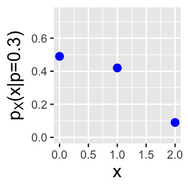
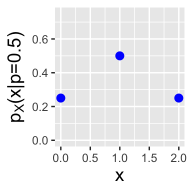
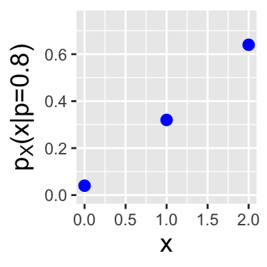
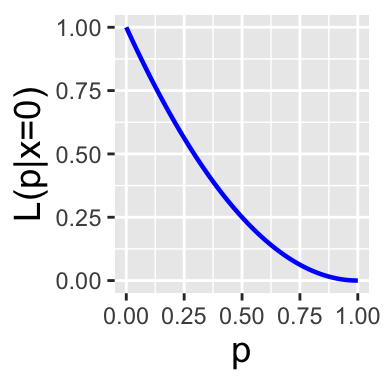
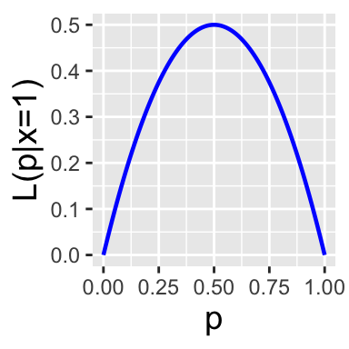
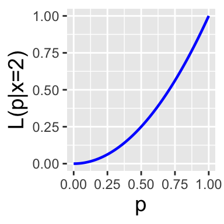
One might question at this point why the likelihood function is important, as it is indeed not a pmf or pdf. We will see below that it is often used when trying to uncover the truth about a population: e.g., given a set of data, randomly sampled from some family of distributions parameterized by \(\theta\), we can utilize the likelihood to infer, or estimate, \(\theta\). This is because, ultimately, the likelihood is a function of observed data, and hence the likelihood is a statistic.
1.13.1 Examples
1.13.1.1 Examples of Likelihood Functions for IID Data
- We are given \(n\) iid samples from \[ f_X(x \vert \theta) = \left\{ \begin{array}{cl} \theta x^{\theta-1} & 0 \leq x \leq 1 \\ 0 & \mbox{otherwise} \end{array} \right. \,. \] The likelihood function is \[ \mathcal{L}(\theta \vert \mathbf{x}) = \prod_{i=1}^n \theta x_i^{\theta-1} = \theta^n \left(\prod_{i=1}^n x_i\right)^{\theta-1} \,, \] while the log-likelihood function is \[\begin{align*} \ell(\theta \vert \mathbf{x}) &= \log \mathcal{L}(\theta \vert \mathbf{x}) = n \log \theta + (\theta-1) \log \prod_{i=1}^n x_i\\ &= n \log \theta + (\theta-1) \sum_{i=1}^n \log x_i \,. \end{align*}\]
- We are given \(n\) iid samples from \[ p_X(x \vert p) = \left\{ \begin{array}{cl} p & x=1 \\ 1-p & x=0 \\ 0 & \mbox{otherwise} \end{array} \right. \,. \] We observe \(k\) values of 1, and \(n-k\) values of 0. Thus the likelihood function is \[ \mathcal{L}(p \vert \mathbf{x}) = \prod_{i=1}^n p_X(x_i \vert p) = \prod_{i=1}^k p \times \prod_{i=1}^{n-k} (1-p) = p^k(1-p)^{n-k} \,, \] and the log-likelihood function is \[ \ell(p \vert \mathbf{x}) = \log \mathcal{L}(p \vert \mathbf{x}) = k \log p + (n-k) \log (1-p) \,. \]
- We are given \(n\) iid samples from the mixed distribution \[ h_X(x \vert \theta) = \left\{ \begin{array}{cl} \frac{x}{\theta} & x \in [0,1] \\ 1-\frac{1}{2\theta} & x=2 \\ 0 & \mbox{otherwise} \end{array} \right. \,. \] We observe \(l\) values between 0 and 1, along with \(n-l\) values of 2. Let \(j\) denote the indices of those data with values between 0 and 1, and \(k\) denote the indices of those data with value 2. The likelihood function is then \[\begin{align*} \mathcal{L}(\theta \vert \mathbf{x}) &= \prod_{i=1}^n h_X(x_i \vert p) = \prod_{j=1}^l \frac{x_j}{\theta} \times \prod_{k=1}^{n-l} \left(1-\frac{1}{2\theta}\right)\\ &= \left( \frac{1}{\theta^l} \prod_{j=1}^l x_j \right) \left(1-\frac{1}{2\theta}\right)^{n-l} \,. \end{align*}\]
1.13.1.2 Coding the Likelihood Function in R
Let’s code and display the likelihood function for the mixed distribution we introduce immediately above. The first thing we will do, however, is generate data from this distribution using inverse transform sampling.
The cdf for this distribution is \[ H_X(x \vert \theta) = \left\{ \begin{array}{cl} 0 & x < 0 \\ x^2/2\theta & 0 \leq x \leq 1 \\ 1/2\theta & 1 < x < 2 \\ 1 & x \geq 2 \end{array} \right. \,. \] For cdf values \(q < 1/(2\theta)\), the inverse function is \(x = \sqrt{2 \theta q}\). We thus code the inverse transform sampler as follows…
Code
set.seed(101)
n <- 100
theta <- 1.5
q <- runif(n, min = 0, max = 1)
w <- which(q < 1 / (2 * theta))
X.sample <- rep(2, n)
X.sample[w] <- sqrt(2 * theta * q[w])Given our dataset, we can compute and visualize the likelihood function \(\mathcal{L}(\theta \vert \mathbf{x})\)…but…this will be problematic. If we examine the likelihood function, we see that its values will be (a) tiny, and (b) spread over a large dynamic range. (In fact, for a sufficiently large dataset, the likelihood function will have a value too small to be recordable as a floating-point number on a computer!) Thus in practice it is often best to visualize the log-likelihood function \(\ell(\theta \vert \mathbf{x}) = \log \mathcal{L}(\theta \vert \mathbf{x})\) as a function of \(\theta\). We do this below in Figure 1.29. (We will leave the derivation of the log-likelihood as an exercise to the reader.)
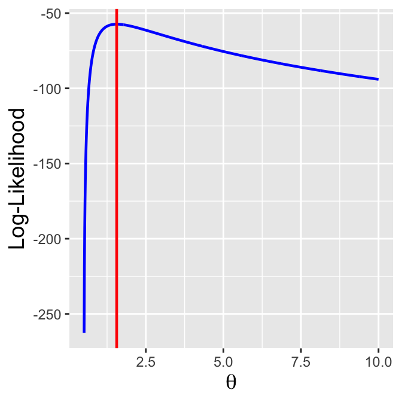
1.14 Point Estimation
What to take away from this section:
To infer the value of a probability distribution parameter \(\theta\), we define a statistic that is informative about \(\theta\): a point estimator.
We do not need to know the sampling distribution of the defined statistic to carry out point estimation.
To compare competing point estimators, we evaluate their long-term performances via the metrics of…
bias;
variance; and
mean-squared error.
To circumvent the guesswork that can be involved in defining an informative statistic, we can derive maximum likelihood estimates or MLEs.
Let’s suppose we are given a sample of iid data \(\{X_1,\ldots,X_n\}\), sampled from some distribution with mean \(E[X]\) and finite variance \(V[X]\). As we started to discuss above, we can use functions of these data, or statistics, to make inferences about population properties: what are plausible values for the population mean \(\mu\)? or the population variance \(\sigma^2\)? or, more generally, any population parameter \(\theta\)?
In point estimation, the statistic that we choose is an estimator of \(\theta\). We dub the estimate \(\hat{\theta}\): this is a number that is our best guess for what the true value of \(\theta\) is, given the data we have observed thus far.
Now…how do we define an estimator? Well, to start, we can guess what might be good estimators, and compare their properties. For instance, here, let’s propose two estimators for \(\mu\): \(\hat{\mu} = X_1\) and \(\hat{\mu} = \bar{X}\). Which is better? It may seem intuitively obvious that \(\bar{X}\) is better, because it incorporates more data…but how do we quantify “better”?
1.14.1 Estimator Bias, Variance, and Mean-Squared Error
In the last section, we indicated that we can assess the utility of a statistic used as an estimator by computing metrics, quantities that allow us to directly compare estimators. Here, we will highlight two of them, the bias and the variance; later, we will highlight others. (Recall that an estimator is a statistic, and thus it is a random variable that is drawn from a sampling distribution with some mean and some variance.)
- Bias: does the estimator yield the true value, on average? In other words, is \(B[\hat{\theta}] = E[\hat{\theta}-\theta] = E[\hat{\theta}] - \theta = 0\)? If so, we say that our estimator is unbiased. Here, both estimators are unbiased: \(E[X_1-\mu] = E[X_1]-\mu = \mu-\mu = 0\), and \(E[\bar{X}-\mu] = E[\bar{X}] - \mu = \mu-\mu = 0\).
- Variance: is the spread of values that the estimator generates from experiment to experiment relatively small, or relatively large? (Recall that it cannot be zero, due to the randomness inherent in the data-generating process!) Here, the first estimator has variance \(V[X_1] = \sigma^2\), while the second has variance \(V[\bar{X}] = \sigma^2/n\). (Recall that we derive the latter result in the previous section!) If \(n > 1\), the second estimator, with its smaller variance, is the better one to use. (If \(n = 1\), then \(\bar{X} = X_1\), so the two estimators are identical anyway.)
See Figure 1.30 for a graphical representation of bias and variance.
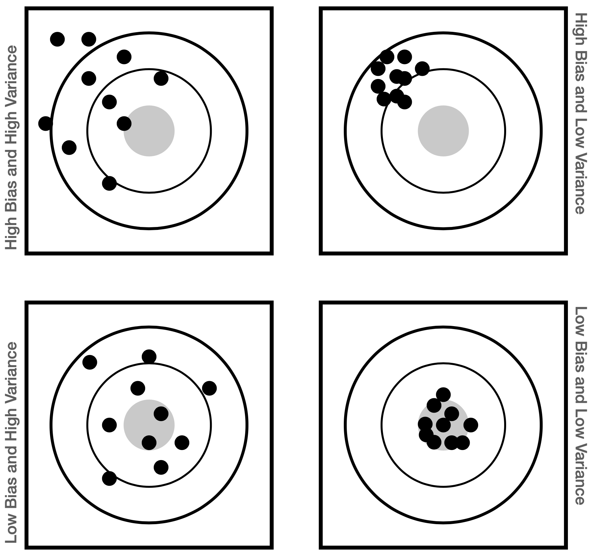
Given a choice, we generally prefer unbiased estimators with smaller variances; however, it is theoretically possible that we might be better off with an estimator with a small bias if it has an even lower variance than the best unbiased one. We can start making sense of this statement now by stating that we can combine the information about bias and variance together into a single metric, the mean-squared error (or MSE). The MSE is defined as \[ MSE[\hat{\theta}] = B[\hat{\theta}]^2 + V[\hat{\theta}] \,, \] and smaller values are better. For \(\hat{\theta} = X_1\), the MSE is \(0^2 + \sigma^2 = \sigma^2\), while for \(\hat{\theta} = \bar{X}\), the MSE is \(0^2 + \sigma^2/n = \sigma^2/n\); \(\bar{X}\) is still the better estimator.
1.14.2 Maximum Likelihood Estimation
At this point, one might be thinking that guessing estimators would be a sub-optimal approach. And one would be correct. Over the remainder of the book, we introduce different algorithmic approaches for defining estimators with (presumably) good properties. Here we examine a first one: maximum likelihood estimation (or MLE).
Above, in the section introducing the likelihood, we discussed how the likelihood function \(\mathcal{L}(\theta \vert \mathbf{x})\) encapsulates the relative plausibilities of different values of \(\theta\) given the data that are observed. Maximum likelihood estimation takes this idea to its natural conclusion: the most plausible value of \(\theta\), the one that maximizes the likelihood function, is indeed a good way to estimate the true value of \(\theta\). Assuming that the likelihood function achieves a maximum away from \(\theta_{\rm lo}\) and \(\theta_{\rm hi}\), the parameter bounds, then the steps to find \(\hat{\theta}_{MLE}\) involve straightforward calculus, albeit with a simplifying twist:
- Write down the likelihood function: \(\mathcal{L}(\theta \vert \mathbf{x}) = \prod_{i=1}^n f_X(x_i \vert \theta)\).
- Take the natural logarithm of \(\mathcal{L}\): \(\ell(\theta \vert \mathbf{x}) = \log \mathcal{L}(\theta \vert \mathbf{x}) = \sum_{i=1}^n \log f_X(x_i \vert \theta)\).
- Compute the first derivative of \(\ell(\theta \vert \mathbf{x})\) with respect to \(\theta\). If \(\theta\) represents more than one parameter, take the first partial derivative with respect to the parameter of interest.
- Set \(\ell'(\theta \vert \mathbf{x}) = 0\).
- Solve for \(\theta\). The solution is \(\hat{\theta}_{MLE}\), assuming that the second derivative of \(\ell(\theta \vert \mathbf{x})\) is negative (i.e., concave down); otherwise, we have actually found a local minimum of the likelihood function.
Note that the “simplifying twist” is transforming the likelihood \(\mathcal{L}(\theta \vert \mathbf{x})\) to the log-likelihood \(\ell(\theta \vert \mathbf{x})\); differentiating the latter is often, if not always, easier than differentiating the former. But even if we skip step 2 and compute the first derivative of \(\mathcal{L}(\theta \vert \mathbf{x})\) directly, we will eventually get the same expression for \(\hat{\theta}_{MLE}\).
For more on point estimation, go to Section 2.11.
1.14.3 Examples
1.14.3.1 Comparing Two Estimators
Let’s assume that we are given \(n\) iid data sampled from the following pdf: \[ f_X(x) = \frac{1}{\theta} \] for \(0 \leq x \leq \theta\), with \(\theta\) unknown. The expected value and variance of this distribution are \(\mu = E[X] = \theta/2\) and \(\sigma^2 = V[X] = \theta^2/12\), respectively. We propose two estimators for \(\theta\): \(2\bar{X}\), and \(X_1+X_2\). Which is better? Intuitively, we know the answer, but can we quantify it, i.e., can we determine which of the two estimators has a smaller mean-squared error?
For \(\hat{\theta} = 2\bar{X}\), the expected value is \[ E[2\bar{X}] = 2E[\bar{X}] = 2\mu = \theta \,, \] and thus we can see that \(2\bar{X}\) is unbiased. (Here, we utilize the general result that \(E[\bar{X}] = \mu\).) Thus the MSE will simply be the variance of this estimator: \[ MSE[\hat{\theta}] = V[2\bar{X}] = 4V[\bar{X}] = 4\frac{\sigma^2}{n} = \frac{\theta^2}{3n} \,. \] (Here, we utilize the general result that \(V[\bar{X}] = \frac{\sigma^2}{n}\).)
For \(\hat{\theta} = X_1 + X_2\), the expected value is \[ E[X_1+X_2] = E[X_1] + E[X_2] = \frac{\theta}{2} + \frac{\theta}{2} = \theta \,. \] The estimator is unbiased. The MSE is thus \[ MSE[\hat{\theta}] = V[X_1+X_2] = V[X_1] + V[X_2] = \frac{\theta^2}{12} + \frac{\theta^2}{12} = \frac{\theta^2}{6} \,. \]
Compare the two MSE expressions, keeping in mind that the second one is meaningless if \(n=1\). For \(n=2\) the MSEs are equivalent, which makes sense since the estimators themselves are equivalent. If \(n > 2\), then the MSE for \(\hat{\theta} = 2\bar{X}\), is smaller, and it will continue getting smaller as \(n\) increases, unlike the MSE for \(\hat{\theta} = X_1 + X_2\).
1.14.3.2 Maximum Likelihood Estimate of Population Parameter
Let’s assume that we are given \(n\) iid data sampled from the following pdf: \[ f_X(x) = \frac{1}{\theta}\exp({-x/\theta}) \,, \] with \(x \geq 0\) and \(\theta > 0\). (To be clear: in real-life situations, we do not know the form of the pmf or pdf from which the data are sampled! We assume a family of distributions, then estimate the value of the population parameter of interest.) For this distribution, \(E[X] = \theta\) and \(V[X] = \theta^2\). The likelihood function is \[ \mathcal{L}(\theta \vert \mathbf{x}) = \prod_{i=1}^n \frac{1}{\theta}\exp\left(-\frac{x_i}{\theta}\right) = \frac{1}{\theta^n} \prod_{i=1}^n \exp\left(-\frac{x_i}{\theta}\right) = \frac{1}{\theta^n} \exp\left(-\frac{1}{\theta}\sum_{i=1}^n x_i\right) \,, \] and the log-likelihood is \[ \ell(\theta \vert \mathbf{x}) = \log \left[ \frac{1}{\theta^n} \exp\left(-\frac{1}{\theta}\sum_{i=1}^n x_i\right) \right] = -n \log \theta - \frac{1}{\theta} \sum_{i=1}^n x_i \,. \] The next step in determining \(\hat{\theta}_{MLE}\) is to take the first derivative with respect to \(\theta\), \[ \ell'(\theta \vert \mathbf{x}) = \frac{d}{d\theta} \ell(\theta \vert \mathbf{x}) = -\frac{n}{\theta} + \frac{1}{\theta^2} \sum_{i=1}^n x_i \,, \] and set the result equal to zero: \[ -\frac{n}{\theta} + \frac{1}{\theta^2} \sum_{i=1}^n x_i = 0 = -n + \frac{1}{\theta} \sum_{i=1}^n x_i \,. \] Solving for \(\theta\), we get \[ \hat{\theta}_{MLE} = \frac{1}{n} \sum_{i=1}^n X_i = \bar{X} \,. \] When we switched from solving for the generic quantity \(\theta\) to solving for an estimator, which is a function of random variables, we switched from using the lower-case generic variable \(x\) to using an upper-case-denoted random variable \(X\).
(Note that we should check to see whether the second derivative is negative at the extremum, indicating that \(\hat{\theta}_{MLE}\) is located at a local maximum of the likelihood function rather than a minimum. So: \[ \ell''(\theta \vert \mathbf{x}) = \frac{d}{d\theta} \ell'(\theta \vert \mathbf{x}) = \frac{n}{\theta^2} - \frac{2}{\theta^3} \sum_{i=1}^n x_i = \frac{n}{\theta^2} \left( 1 - \frac{2n}{\theta}\bar{x} \right)\,. \] Let’s plug in \(\theta = \hat{\theta}_{MLE} = \bar{x}\): \[ \ell''(\hat{\theta}_{MLE} \vert \mathbf{x}) = \frac{n}{\bar{x}^2} \left( 1 - 2n \right) \,. \] We know that \(n\) is positive and \(\geq 1\) and that \(\bar{x} > 0\), so indeed \(\ell''(\hat{\theta}_{MLE} \vert \mathbf{x}) < 0\) and thus we have detected a maximum of the likelihood function.)
Now, is this estimate biased? We know from results shown above that \(E[\bar{X}] = \theta\), thus \(B[\hat{\theta}_{MLE}] = E[\hat{\theta}_{MLE}] - \theta = \theta - \theta = 0\) and thus the estimator is unbiased. We also know that \(V[\bar{X}] = \sigma^2/n = \theta^2/n\). The question, to be answered in Section 2.11.2, is whether we can possibly find an estimator with a lower variance via some other estimation approach…or if this indeed the best that we can do.
Now, when we solve for, e.g., \(\hat{\theta}_{MLE}\), we can solve for other quantities as well…it is just algebra. Meaning, for instance, that if we want to estimate \(\hat{\theta}_{MLE}^2\) for whatever reason, we can just square both sides in the solution above: \[ (\hat{\theta}_{MLE})^2 = (\bar{X})^2 ~~\Rightarrow~~ \hat{\theta}_{MLE}^2 = \bar{X}^2 \,. \] (This is a manifestation of the so-called invariance property of the MLE.) Now, is this a biased estimator for \(\theta^2\)? We can utilize the shortcut formula for computing variance to find that \[ E[\bar{X}^2] = V[\bar{X}] + (E[\bar{X}])^2 = \frac{\sigma^2}{n} + \mu^2 = \frac{\theta^2}{n} + \theta^2 = \theta^2 \left( 1 + \frac{1}{n} \right) \neq \theta^2 \,. \] This estimator is biased…but the bias goes away as the sample size \(n\) increases. That means that we would call this estimator asymptotically unbiased, i.e., it is unbiased when the sample size is infinite. We note here that maximum likelihood estimates are always either unbiased or asymptotically unbiased.
1.14.3.3 Simulation: Sampling Distribution of Maximum Likelihood Estimates
To drive home the point that maximum likelihood estimates are random variables, we simulate the process of estimating \(\theta\) for the pdf \(f_X(x) = \theta x^{\theta-1}\), where \(x \in [0,1]\).
Let’s write down the (log-)likelihood: \[\begin{align*} \mathcal{L}(\theta \vert \mathbf{x}) &= \prod_{i=1}^n \theta x_i^{\theta-1} \\ &= \theta^n \left( \prod_{i=1}^n x_i \right)^{\theta - 1} \\ \Rightarrow ~ \ell(\theta \vert \mathbf{x}) &= n \log \theta + (\theta-1)\log \left( \prod_{i=1}^n x_i \right) \\ &= n \log \theta + (\theta-1) \sum_{i=1}^n \log x_i \,, \end{align*}\] and solve for the MLE: \[ \frac{d}{d\theta} \ell(\theta \vert \mathbf{x}) = \frac{n}{\theta} + \sum_{i=1}^n \log x_i ~ \Rightarrow ~ \hat{\theta}_{MLE} = -\frac{n}{\sum_{i=1}^n \log x_i} \,. \] Given this expression, we can now determine the empirical distribution. See Figure 1.31. We observe immediately that the distribution is right-skewed. (As we will see in Section 2.11.3, as \(n \rightarrow \infty\), the empirical distribution will tend more and more to a bell-curve-like shape.)
The empirical mean is 2.317 The empirical standard deviation is 0.377 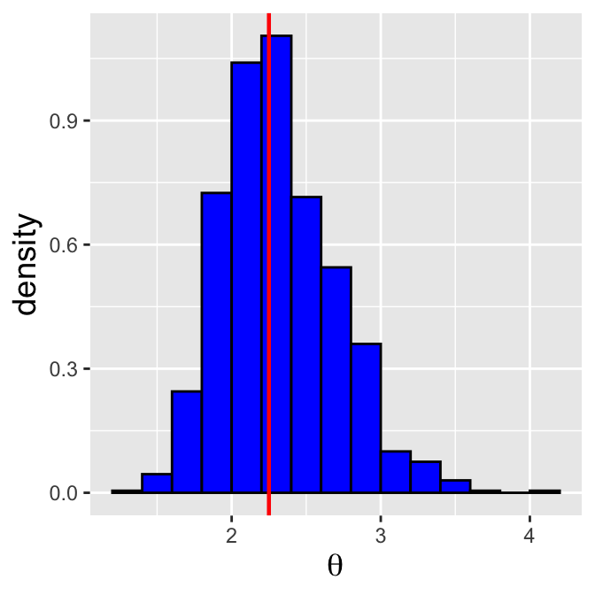
1.15 Statistical Inference with Sampling Distributions {sec-chap1inference}
What to take away from this section:
- How the sampling distribution of a defined statistic can help us infer plausible ranges for a distribution parameter \(\theta\), or allow us to test whether a proposed value for \(\theta\) is plausible.
A fundamental issue with point estimation is that, e.g., it does not provide a notion of how uncertain the estimate is. By this, we do not mean the standard error of the sampling distribution for the statistic we use when making the estimate (which is a quantity that we can derive), but rather how large (or small) is the range of plausible values of \(\theta\) given the observed value of the statistic? Point estimation also does not allow us to answer the question of “is a particular hypothesized value of \(\theta\) plausible given what we observe?” We can resolve the first issue by computing a confidence interval for \(\theta\), and the second via hypothesis testing. We discuss each of these concepts in turn in the next two sections. Before doing so, however, we will show how the construction of confidence intervals and the performance of hypothesis tests both boil down to performing a root-finding exercise in which we work directly with a sampling distribution.
Let’s posit a simple situation in which we sample a single datum according to the following probability density function: \[ f_X(x \vert \theta) = \frac{1}{2} ~~~ x \in [\theta-1,\theta+1] \] Our statistic is thus \(Y = X\), and the sampling distribution \(f_Y(y \vert \theta)\) is equivalent to \(f_X(x \vert \theta)\). (Beginning in Chapter 2, we will discuss how to derive sampling distributions for statistics computed from \(n\) independent and identically distributed [iid] random variables, and begin to work with more typically seen statistics like \(\bar{X}\).) We can alter the shape and/or location of the sampling distribution by changing the value(s) of \(\theta\). In Figure 1.32, we show how the pdf moves with \(\theta\); as \(\theta\) changes from 2.8 to 5.2, the pdf shifts (smoothly) from the location indicated by the red lines to that indicated by the blue lines. Now, let’s assume that the green line in the figure, at value \(y_{\rm obs} = 3.4\), is the statistic value that we actually observe. What can we conclude right away, on the basis of this figure? We can conclude that this observed value is plausible if \(\theta = 2.8\), but implausible if \(\theta = 5.2\). In other words, 2.8 is an “acceptable” value for \(\theta\), but 5.2 is not.
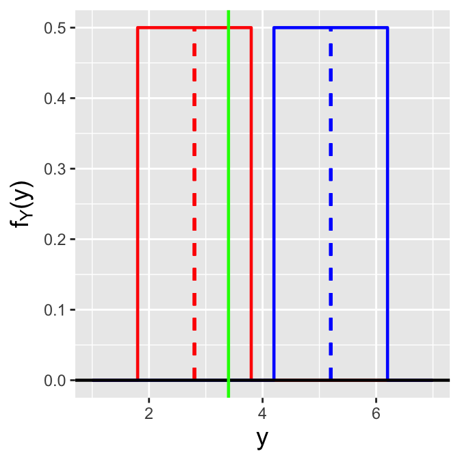
To determine the range of plausible values of \(\theta\), given the data we observe, we can invert each of the following cdf-based equations: \[ F_Y(y_{\rm obs} \vert \theta) = 0 ~~~\mbox{and}~~~ F_Y(y_{\rm obs} \vert \theta) = 1 \,, \] where \(F_Y(y_{\rm obs} \vert \theta)\) is the cdf of \(Y\) evaluated at the coordinate \(y_{\rm obs}\). The cdf is \[ F_Y(y \vert \theta) = \int_{\theta-1}^y \frac{dx}{2} = \left. \frac{x}{2} \right|_{\theta-1}^y = \frac12(y-\theta+1) \,, \] and thus the solutions to the two equations above are \[ \theta = y_{\rm obs}+1 ~~~\mbox{and}~~~ \theta = y_{\rm obs}-1 \,. \] Our “plausible interval” is \([y_{\rm obs}-1,y_{\rm obs}+1]\), or here, \([2.4,4.4]\).
However, there is an issue with our initial approach: it only provides an informative interval for \(\theta\) if the pdf for \(Y\) has a finite, bounded domain. If, for instance, the pdf for \(Y\) has the domain \((-\infty,\infty)\), and \(\theta\) represented the mean of \(Y\)’s sampling distribution, then our plausible interval for \(\theta\) would also be \((-\infty,\infty)\). To generalize the workflow, we first combine the two equations above into the single equation \[ F_Y(y_{\rm obs} \vert \theta) - q = 0 \,, \] where \(q \in [0,1]\) is an appropriately chosen distribution quantile. (Above, we set \(q\) to 0 and to 1.) Appealing to convention, for now, we will set \(q\) to either \(\alpha/2\) or \(1 - \alpha/2\), where \(\alpha\) is typically set to 0.05. (This convention is grounded in the idea that we wish balance the tradeoff between interval length\(-\)shorter intervals are “better”\(-\)and interval coverage\(-\)smaller values of \(\alpha\) are better.)
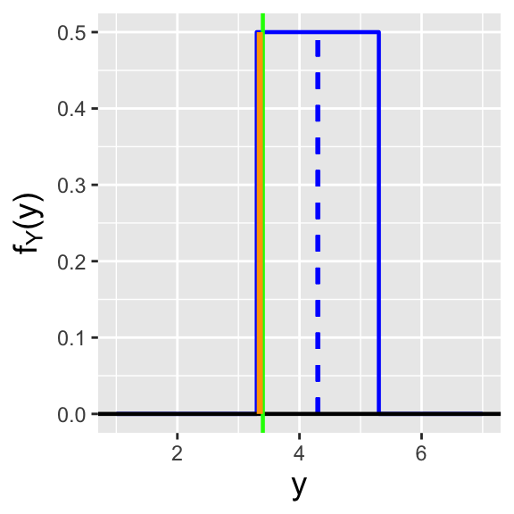
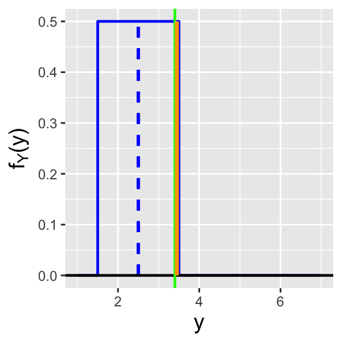
(See Figure 1.33.) And here we come back to the notion that this is a “root-finding exercise.” One bound is found by solving \[
F_Y(y_{\rm obs} \vert \theta) - \frac{\alpha}{2} = 0 \,,
\] and calling the solution \(\hat{\theta}_U\). As we can see in the left panel of the figure, \(\hat{\theta}_U\) represents the upper bound on \(\theta\). (See Figure 1.34 for an alternative illustration showing what is happening when we are “finding roots.”) The other bound, \(\hat{\theta}_L\), is found by solving \[
F_Y(y_{\rm obs} \vert \theta) - \left(1-\frac{\alpha}{2}\right) = 0 \,.
\] We will note here that in relatively rare circumstances, we can solve for \(\hat{\theta}_L\) and \(\hat{\theta}_U\) by hand, but as we will see later, we can always solve for these quantities numerically using, e.g., R’s uniroot() function.
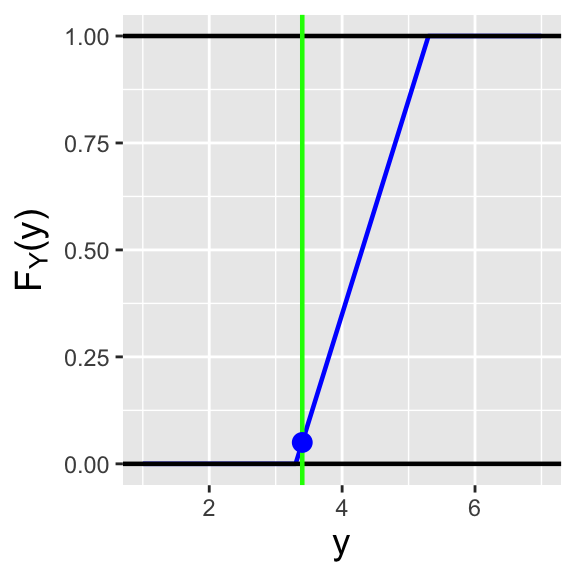
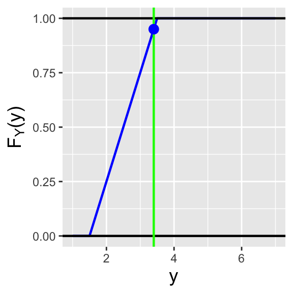
Now, what about hypothesis testing? As we will see below, in a hypothesis test, we adopt a null hypothesis (\(\theta = \theta_o\)) and an alternative hypothesis (e.g., \(\theta \neq \theta_o\)), and we combine this information with \(y_{\rm obs}\) to determine whether the null hypothesis is viable (in which case we “fail to reject the null”) or not (in which case we “reject the null”). For a two-tail test, we would determine the boundaries of the so-called rejection region by finding the roots \(y_{\rm RR,lo}\) and \(y_{\rm RR,hi}\) for each of the following equations \[\begin{align*}
F_Y(y_{\rm RR,lo} \vert \theta_o) - \frac{\alpha}{2} &= 0 ~~\Rightarrow~~ y_{\rm RR,lo} = F_Y^{-1}(\alpha/2 \vert \theta_o) \\
F_Y(y_{\rm RR,hi} \vert \theta_o) - \left(1-\frac{\alpha}{2}\right) &= 0 ~~\Rightarrow~~ y_{\rm RR,hi} = F_Y^{-1}(1-\alpha/2 \vert \theta_o)\,,
\end{align*}\] where \(F_Y^{-1}(\cdot)\) is the inverse cdf function for \(Y\)’s sampling distribution. Here, if \(y_{\rm obs} < y_{\rm RR,lo}\) or \(y_{\rm obs} > y_{\rm RR,hi}\), we would reject the null, i.e., we would deem the stated value \(\theta_o\) to be implausible implausible. Note how the equations above are the same ones we use when constructing confidence intervals; here we fix \(\theta = \theta_o\) (as opposed to solving for \(\theta\)) and we solve for \(y\) (as opposed to fixing \(y = y_{\rm obs}\)). As is the case for confidence intervals, sometimes we can find the roots by hand, but if not, we can often find them by using off-the-shelf inverse cdf codes like R’s qnorm() (if the sampling distribution is a normal distribution), etc.
An important message to take away from this section is that confidences interval estimation and hypothesis testing both involve the same fundamental root-finding exercise: they only differ in what values are fixed and what values we are solving for!
1.16 Confidence Intervals
What to take away from this section:
The sampling distribution of a defined statistic can help us construct a confidence interval for a distribution parameter \(\theta\), that has a long-term probabilistic guarantee of overlapping, or covering, \(\theta\)’s true value.
The fundamental equation underlying interval estimation is \[ F_Y(y_{\rm obs} \vert \theta) - q = 0 \,, \] which we solve for \(\theta\); \(Y\) is our defined statistic, \(y_{\rm obs}\) is the observed value of \(Y\), and \(q\) is an appropriately chosen distribution quantile.
Interval estimation is a mechanism to determine a range of possible values for a distribution parameter \(\theta\) that overlaps the true but unknown value with some stated probability. A two-sided interval estimate, or confidence interval, has the form \[ P\left( \hat{\theta}_L \leq \theta \leq \hat{\theta}_U \right) = 1 - \alpha \,, \] where \(1 - \alpha\) is the user-set confidence coefficient, which typically has the value 0.95 (or \(\alpha = 0.05\)). (Technically, the confidence coefficient is the infimum (i.e., the minimum value) of the coverage probabilities for a particular interval estimator. This nuance is not important if we utilize the general root-finding algorithm laid out in the last section to determine interval bounds. We will return to this point in an example in Section 5.4.) One can also define one-sided intervals: \[ P\left( \hat{\theta}_L \leq \theta \right) = 1 - \alpha ~~\mbox{and}~~ P\left( \theta \leq \hat{\theta}_U \right) = 1 - \alpha \,. \]
It is important for us to interpret an interval estimate correctly:
- it is a random interval, meaning that if we re-do the data-generating experiment, the interval will change; and
- we state that the probability that, e.g., the two-sided interval estimate \([\hat{\theta}_L,\hat{\theta}_U]\) will overlap \(\theta\) is \(1 - \alpha\).
In particular, one does not say “the probability that \(\theta\) lies in the stated interval is \(1-\alpha\).” \(\theta\) is a population quantity, and thus we cannot make probabilistic statements about it. It has the (unknown) value it has. Stated another way, in reference to point 2: the probability of \(1 - \alpha\) refers to the reliability of the estimation procedure and not to any one specific interval. For instance, if we compute an interval of [1,2] and then re-do the experiment and compute an interval of [2.5,3.5], and if we say there is a 95% chance that \(\theta\) is in [1,2] and a 95% chance it is in [2.5,3.5], then there must be a 190% chance it is in either. A computed interval either overlaps the true value, or it does not; it is no longer a matter of probability. See Figure 1.35.
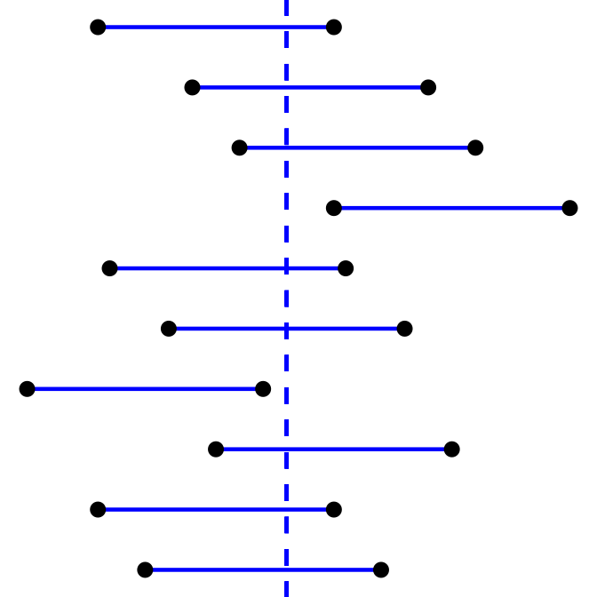
As laid out in the last section above, to determine a confidence interval bound, one would determine the root of the following equation: \[\begin{align*} F_Y(y_{\rm obs} \vert \theta) - q &= 0 \,. \end{align*}\] There is a very important nuance here, however, that we ignored in the last section, which is that it is not guaranteed that the value of the statistic \(Y\) that we adopt to construct the interval increases as \(\theta\) increases. What that means here is that if, e.g., \(q = \alpha/2\), then the root \(\hat{\theta}\) might represent an upper bound on \(\theta\)…but it might represent a lower bound instead. It all comes down to whether the expected value \(E[Y]\) increases as \(\theta\) increases, or decreases as \(\theta\) increases.
Before we turn to examples, it is important to put the methodology we outline here for deriving interval bounds into historical context.
In traditional calculus-based probability and statistical inference classes, the focus has been on introducing techniques for constructing confidence intervals analytically, but they are usually analytical only up to a point: we typically have to utilize statistical tables to derive final numerical answers. (This is the case when we work with, e.g., the normal distribution.) An example of such a technique is the pivotal method, which for illustrative purposes we discuss in an example in Section 2.12. However, the pivotal method is not generally applicable across all families of distributions, and thus other methods exist as well, methods that are not as commonly seen in introductory classes (see, e.g., Chapter 9 of Casella and Berger (2002)). Our methodology is that described in section 9.2.3 of Casella and Berger (2002), entitled “Pivoting the CDF,” where it is noted that “even if [the equations \(F_Y(y_{\rm obs} \vert \theta_{1-\alpha/2}) = 1 - \alpha/2\) and \(F_Y(y_{\rm obs} \vert \theta_{\alpha/2}) = \alpha/2\)] cannot be solved analytically, we really only need to solve them numerically since the proof that we have a \(1-\alpha\) confidence interval [does] not require an analytic solution.” This is key: we can use this technique to solve for intervals bounds by hand, or by writing code when we cannot solve for the bounds by hand (as we will observe beginning in Section 2.12). The methodology we present is thus generally applicable and is the only one that a student ultimately needs to learn in order to construct confidence intervals. (However, knowing about, e.g., the pivotal method is good, because it is still a commonly utilized technique and one should be able to recognize it when it is used by others.)
1.16.1 Confidence Intervals: Reference Table
Below we summarize the information given above in tabular form.
| Interval | \(E[Y]\) Increases with \(\theta\)? | \(q\) for Lower Bound | \(q\) for Upper Bound |
|---|---|---|---|
| two-sided | yes | \(1-\alpha/2\) | \(\alpha/2\) |
| no | \(\alpha/2\) | \(1-\alpha/2\) | |
| one-sided lower | yes | \(1-\alpha\) | \(-\) |
| no | \(\alpha\) | \(-\) | |
| one-sided upper | yes | \(-\) | \(\alpha\) |
| no | \(-\) | \(1-\alpha\) |
This is the confidence interval reference table that we will refer back to throughout the rest of book. To be clear: this is not a table to memorize!
For more on confidence intervals, go to Section 2.12.
1.16.2 Examples
1.16.2.1 Confidence Interval Where \(E[Y]\) Increases With \(\theta\)
We have conducted an experiment in which we sample \(n=1\) datum from the following pdf: \[ f_X(x) = \theta x^{\theta-1} ~~~ x \in [0,1] \,. \] The value we observe is \(x_{\rm obs}\). Below, we define a two-sided confidence interval on \(\theta\) assuming \(\alpha = 0.05\), as well as show how we would define either a lower or an upper bound on \(\theta\).
Before proceeding, we will make a notation change by saying our statistic \(Y\) equals \(X\) (because, with a single datum, what else could our statistic realistically be?), and thus the observed value is \(y_{\rm obs} = x_{\rm obs}\). (This makes our random variable notation consistent with that of the last section.) The sampling distribution pdf is \(f_Y(y) = \theta y^{\theta-1}\) and the cdf is \[ F_Y(y) = \int_0^y \theta z^{\theta-1} dz = \left. z^\theta \right|_0^y = y^\theta \,. \]
Now, does \(E[Y]\) increase with \(\theta\)? \[\begin{align*} E[Y] = \int_0^1 y f_Y(y) dy &= \int_0^1 y \theta y^{\theta-1} dy \\ &= \theta \int_0^1 y^{\theta} dy \\ &= \frac{\theta}{\theta+1} \left. y^{\theta+1} \right|_0^1 = \frac{\theta}{\theta+1} \,. \end{align*}\] As \(\theta \rightarrow \infty\), \(E[Y]\) increases towards 1. The confidence interval reference table thus tells us that for the lower bound, \(q = 1-\alpha/2\), while for the upper bound, \(q = \alpha/2\). For the lower bound, we find that \[\begin{align*} y_{\rm obs}^{\hat{\theta}_L} &= 1 - \frac{\alpha}{2} \\ \Rightarrow ~~~ \hat{\theta}_L \log y_{\rm obs} &= \log \left( 1 - \frac{\alpha}{2} \right) \\ \Rightarrow ~~~ \hat{\theta}_L &= \frac{\log \left( 1 - \frac{\alpha}{2} \right)}{\log y_{\rm obs}} \,, \end{align*}\] while for the upper bound, we simply switch \(1-\alpha/2\) to \(\alpha/2\): \[ \hat{\theta}_U = \frac{\log \left( \frac{\alpha}{2} \right)}{\log y_{\rm obs}} \,, \] For instance, for \(\alpha = 0.05\) and \(y_{\rm obs}\) = 0.6, the confidence interval would be \(\hat{\theta}_L = 0.05\) to \(\hat{\theta}_U = 7.22\). Not surprisingly, if we have but a single datum, we cannot say that much about \(\theta\)!
We can also solve for a “95% upper bound,” wherein we use the same upper bound equation as above but substitute \(\alpha\) for \(\alpha/2\): \[ \hat{\theta}_U = \frac{\log \alpha}{\log y_{\rm obs}} \,, \] The one-sided interval would be \((-\infty,5.86]\) (although because \(\theta\) is limited to be \(> 0\), we would actually write \((0,5.86]\)). The one-sided lower bound is then \[ \hat{\theta}_L = \frac{\log (1 - \alpha)}{\log y_{\rm obs}} \,, \] which in our example evaluates to \([0.10,\infty)\).
1.16.2.2 Confidence Interval Where \(E[Y]\) Decreases With \(\theta\)
Let’s switch things up a bit from the previous example, and assume that instead of sampling a single datum from the pdf \(\theta x^{\theta-1}\), we instead sample one from the pdf \[ f_X(x) = \theta (1-x)^{\theta-1} \,, \] where \(x \in [0,1]\) and the cdf is \[\begin{align*} F_X(x) &= \int_0^x \theta (1-y)^{\theta-1} dy \\ &= \left. -(1-y)^\theta \right|_0^x = 1 - (1-x)^\theta \,. \end{align*}\] How does this change our confidence interval computations?
We first compute the expected value (after changing the notation from \(x\) to \(y\) to be consistent about how we denote statistics). This computation is a bit more complicated to do, as it involves integration by parts, but it is still relatively straightforward: \[\begin{align*} E[Y] = \int_0^1 y f_Y(y) dy &= \int_0^1 y \theta (1-y)^{\theta-1} dy \\ &= \left. -y(1-y)^\theta \right|_0^1 + \int_0^1 (1-y)^\theta dy \\ &= 0 - \frac{1}{\theta+1} \left. (1-y)^{\theta+1} \right|_0^1 = \frac{1}{\theta+1} \,. \end{align*}\] As \(\theta\) increases, \(E[Y]\) decreases. Thus, unlike in the last example, \(q = \alpha/2\) will map to the interval lower bound, while \(q = 1-\alpha/2\) will map to the upper bound. The calculations then proceed in an analogous manner to those in the last example: \[\begin{align*} 1-(1-y_{\rm obs})^{\hat{\theta}_L} &= \frac{\alpha}{2} \\ \Rightarrow ~~~ (1-y_{\rm obs})^{\hat{\theta}_L} &= 1 - \frac{\alpha}{2} \\ \Rightarrow ~~~ \hat{\theta}_L \log (1-y_{\rm obs}) &= \log \left( 1 - \frac{\alpha}{2} \right) \\ \Rightarrow ~~~ \hat{\theta}_L &= \frac{\log \left( 1 - \frac{\alpha}{2} \right)}{\log (1-y_{\rm obs})} \,, \end{align*}\] and \[\begin{align*} 1-(1-y_{\rm obs})^{\hat{\theta}_U} &= 1 - \frac{\alpha}{2} \\ \Rightarrow ~~~ (1-y_{\rm obs})^{\hat{\theta}_U} &= \frac{\alpha}{2} \\ \Rightarrow ~~~ \hat{\theta}_U \log (1-y_{\rm obs}) &= \log \left( \frac{\alpha}{2} \right) \\ \Rightarrow ~~~ \hat{\theta}_U &= \frac{\log \left( \frac{\alpha}{2} \right)}{\log (1-y_{\rm obs})} \,. \end{align*}\] For instance, if \(\alpha = 0.05\) and \(y_{\rm obs} = 0.6\), the interval is \([\hat{\theta}_L,\hat{\theta}_U] = [0.028,4.03]\).
We can also construct one-sided intervals, as we do above. We leave the computation of these intervals to the reader, noting that the 95% upper bound is 3.27 and the 95% lower bound is 0.056.
1.16.2.3 Simulation: Confidence Interval Coverage
In the first example above, where \[ f_X(x) = \theta x^{\theta-1} \,, \] with \(\theta > 0\) and \(x \in [0,1]\), we find the two-sided confidence interval \[ \left[ -\frac{0.0253}{\log y_{\rm obs}} , -\frac{3.689}{\log y_{\rm obs}} \right] \,, \] where we assume a confidence coefficient of \(\alpha = 0.05\). A question that naturally arises is: does this confidence interval actually overlap, or cover, the true value \(\theta\) 95% of the time? We can begin to determine the answer with a relatively simple simulation.
Let’s assume that the true value of \(\theta\) is 1. (Coverage simulations require that we specify a value for \(\theta\), so the results are always conditional on what we specify.) Let’s also state here that \(f_X(x)\) is part of the beta family of distributions, which we officially introduce in Section 3.3.4. (This allows us to utilize the
Rrandom variable sampling functionrbeta()rather than having to create our own inverse-transform data sampler.)
Code
set.seed(101)
n <- 1
num.sim <- 10000
theta <- 1
y.obs <- rbeta(n * num.sim, theta, 1)
hat.theta.L <- -0.0253/log(y.obs)
hat.theta.U <- -3.689/log(y.obs)
(coverage <- sum(theta >= hat.theta.L & theta <= hat.theta.U) / num.sim)[1] 0.9523What is happening in the last line of code above? First of all, by surrounding this line with parentheses, we are telling
Rto not only assign a value to the variablecoverage, but to print the value ofcoverageas well. As far as the argument passed tosum():theta >= hat.theta.Lis a logical comparison, an implicit function call that returnsTRUEif \(\theta \geq \hat{\theta}_L\) andFALSEotherwise. The ampersand&is the logicalANDoperator that combines the results of the comparison on the left and the one on the right:TRUE & TRUEreturnsTRUE, otherwiseFALSEis returned. (This stands in contrast to the logicalORoperator,|, which only returnsFALSEforFALSE | FALSE.) So the long argument passed tosum()turns into a logical vector ofTRUEs (if the true value is inside the bounds) andFALSEs (if the true value is outside the bounds). What happens when we pass a logical vector tosum()? It treatsTRUEas 1 andFALSEas 0…in other words,sum()returns the number ofTRUEvalues.
We find that 9,523 of the 10,000 intervals overlap \(\theta = 1\). Because we do not perform an infinite number of simulations, the coverage that we estimate is a random variable, and we do not expect the value to match 9500 exactly. What we observe is very strong evidence that our interval construction algorithm has the coverage that we defined it to have. (Once we introduce the binomial distribution in Section 3.1, we can turn “very strong evidence” into something more firmly quantitative!)
1.17 Hypothesis Testing
What to take away from this section:
The sampling distribution of a defined statistic can help us perform a hypothesis test in which we determine whether a proposed value for a distribution parameter \(\theta\) (the null hypothesis) is plausible.
A p-value is the probability that we would observe the statistic value we observe, or one that is more “extreme,” if the null hypothesis is correct.
A hypothesis test is a framework for making a decision, and not for (dis)proving a hypothesis; the decision that we make, given the observed data, can be wrong.
Hypothesis testing is, in short, an inference mechanism that takes a pre-conceived notion about \(\theta\) into account. This is in contrast to both point estimation and interval estimation, where we derive \(\hat{\theta}\) or \((\hat{\theta}_L,\hat{\theta}_U)\) without regard to what we might think the true value of \(\theta\) might be. Perhaps we have randomly sampled a set of students and recorded their heights. Point estimation provides an estimate of the average student height; interval estimation provides an interval that has probability \(1-\alpha\) of overlapping the true student weight; but hypothesis testing allows one to ask questions like “do my data support my hypothesis that the true average height of students on campus is 66 inches?”
The steps of basic hypothesis testing are as follows.
- We formulate a null hypothesis, denoted \(H_o\) (“H naught”), in which we specify the value we are testing. Here, that hypothesis might be \(H_o: \mu = 66\).
- We formulate an alternate or alternative hypothesis, denoted \(H_a\) (“H a”). This also takes our pre-conceived notions into account: do we wish to test whether the average student height is higher, lower, or simply substantially different from \(H_o\)? (So here, the possibilities are \(H_a: \mu < 66\) (a lower-tail test), \(H_a: \mu > 66\) (an upper-tail test), or \(H_a: \mu \neq 66\) (a two-tail test.)
- We choose a test statistic (e.g., \(\bar{X}\)) whose sampling distribution we can specify assuming \(H_o\) is true.
- We choose the level of the test \(\alpha\).
- Utilizing the sampling distribution for the test statistic, we compute what we dub a \(p\)-value. Combining this value with \(\alpha\) allows us to make a decision given the data we observe: if \(p \leq \alpha\), we reject the null hypothesis, and if \(p > \alpha\), we fail to reject it.
There is much to unpack here.
We will start by stating that it is imperative that one specify \(H_o\), \(H_a\), and \(\alpha\) before any data are collected (or at the very least before any data are examined). To look at the data first and then formulate hypotheses and set levels acts to bias the process: it is human nature to be tempted to (re)define the test so as to achieve the result we seek as researchers. In the end, testing is about assessing pre-conceived notions; actively working to achieve a particular result should never be our aim.
Another thing to keep in mind is that hypothesis testing generates decisions, not proofs. When we formulate a test, we are defining a decision boundary: we decide whether we have sufficient evidence to reject the null. When we do not, we fail to reject the null, i.e., we do not say that we have proven that the null is correct, but rather we have concluded that we simply do not have enough data to convince ourselves that the null hypothesis is wrong. And the decisions we make can be wrong! This leads to some more important hypothesis-testing terminology:
- Type I error: this is the probability that we will decide to reject the null hypothesis when it is actually correct. We set this quantity…this is \(\alpha\) (the level of the test). The conventional choice for \(\alpha\) is 0.05: if the null is correct, we have a 1 in 20 chance of erroneously deciding to reject it. (This is because if the null hypothesis is correct, then the observed \(p\)-value is sampled uniformly between 0 and 1. We demonstrate this in an example below.)
- Type II error: this is the probability that we would fail to reject the null hypothesis given an arbitrary value of \(\theta\); this quantity is denoted \(\beta\), and it is a function of both \(\theta\) and \(\alpha\).
Now that we have laid out the basic framework and terminology, we need to illustrate how hypothesis testing works in practice. But we have the same issue here that we have when constructing confidence intervals in the last section: we do not yet have the tools to derive the sampling distribution for the test statistic. (We introduce these later, in Section 2.3.2.) So, for now, we illustrate hypothesis testing by assuming that we sample a single datum \(X\) from a pdf (which is, by definition, the sampling distribution for our test statistic \(Y = X\)).
1.17.1 Hypothesis Testing: p-Value
Above, we specified how we would use a \(p\)-value in order to make a decision about the viability of a null hypothesis; for instance, if \(p \leq \alpha\), we would reject the null and conclude that the true value of the parameter of interest \(\theta\) is different from \(\theta_o\) (with how it is different being dictated by the form of the alternative hypothesis \(H_a\)). What we did not specify is the definition of the \(p\)-value, in words, and how we would compute it.
In words: a \(p\)-value is the probability of observing the statistic value we actually observe, or a more extreme value, when the null hypothesis is correct. For instance, when in the context of a lower-tail test we observe the value \(y_{\rm obs}\), and \(E[Y]\) increases with \(\theta\), the \(p\)-value would be the probability \(P(Y \leq y_{\rm obs})\). A reader might notice immediately that this particular probability is the cdf value \(F_Y(y_{\rm obs} \vert \theta_o)\). This means that \(p\)-value calculations are simply cdf-based calculations, given a sampling distribution.
Let’s illustrate this with an example. Assume that we sample a single datum according to a distribution with probability density function \[ f_X(x) = \frac{1}{\theta} \exp\left(-\frac{x}{\theta}\right) \,, \] where \(\theta > 0\) and \(x \geq 0\). Let’s further assume that our null hypothesis is \(H_o : \theta_o = 2\) and that we wish to conduct an upper-tail test at the level \(\alpha = 0.05\): \(H_a : \theta > \theta_o\). We carry out our experiment and we observe \(x_{\rm obs} = 10\). What is the \(p\)-value? What do we conclude?
The cumulative distribution function for our statistic \(Y = X\) will be \[ F_Y(y \vert \theta) = \int_0^y f_X(x) dx = 1 - \exp\left(-\frac{y}{\theta}\right) \] If the null hypothesis is correct, then the observed statistic value \(y_{\rm obs}\) should be consistent with a distribution whose shape is dictated by \(\theta_o\), i.e., \(F_Y(y_{\rm obs} \vert \theta)\) should not have an extreme value (here, a value close to 1). For our posited experiment, the observed value is \[ 1 - \exp\left(-\frac{y_{\rm obs}}{\theta_o}\right) = 1 - \exp\left(-\frac{10}{2}\right) = 1 - \exp(-5) = 0.993 \,. \] This appears to be extreme: there is only a 0.7% chance that we would sample the value \(y_{\rm obs} = x_{\rm obs} = 10\), or a value even more extreme, when \(\theta = 2\). And indeed, for this upper-tail test, that is our \(p\)-value: \(p = 0.007\). Since \(p \leq \alpha\), we reject the null hypothesis and conclude that we have sufficient statistical evidence to say that \(\theta > 2\).
1.17.2 Hypothesis Testing: p-Value Reference Table
Below, we summarize how we derive \(p\)-values using the cumulative distribution functions of sampling distributions, for different testing situations. Note that as was the case with the confidence interval reference table, the contents of this reference table are not to be memorized!
| Type | \(E[Y]\) Increases with \(\theta\)? | \(p\)-Value |
|---|---|---|
| two-tail | N/A | \(2 \times \mbox{min}[F_Y(y_{\rm obs} \vert \theta_o), 1-F_Y(y_{\rm obs} \vert \theta_o)]\) |
| lower-tail | yes | \(F_Y(y_{\rm obs} \vert \theta_o)\) |
| no | \(1 - F_Y(y_{\rm obs} \vert \theta_o)\) | |
| upper-tail | yes | \(1 - F_Y(y_{\rm obs} \vert \theta_o)\) |
| no | \(F_Y(y_{\rm obs} \vert \theta_o)\) |
Note that “lower” and “upper” always refer to whether \(\theta\) is less than or greater than \(\theta_o\), and not to a specific tail of the sampling distribution for \(Y\) itself. (For instance, if \(E[Y]\) decreases with \(\theta\), then the upper tail for \(\theta\) would map to the lower tail of \(Y\)’s sampling distribution.) Also, we note the following.
- If we reject the null using a one-tail test, for a given dataset, it is not guaranteed that we would have rejected the null using a two-tail test.
- If we reject the null using a two-tail test, it is also not guaranteed that we would have rejected the null using a one-tail test: it would ultimately depend on which tail is being “tested.”
For more on hypothesis testing, go to Section 2.13.
1.17.3 Examples
1.17.3.1 Hypothesis Test Where \(E[Y]\) Increases With \(\theta\)
We repeat the first example in the confidence interval section above, in which \(f_X(x) = \theta x^{\theta-1}\) for \(x \in [0,1]\), and in which we sample a single datum (and thus assume that our test statistic is \(Y = X\), with sampling distribution given by \(f_X(x)\)). Let’s assume our null hypothesis is \(H_o : \theta = \theta_o = 1\), and that we are testing this against the alternative \(H_a : \theta < \theta_o\). If \(y_{\rm obs} = x_{\rm obs} = 0.08\), what is the \(p\)-value for this test? Assuming \(\alpha = 0.05\), what do we conclude?
We start by reminding ourselves that \(E[Y] = \theta/(\theta+1)\) and that it increases with \(\theta\). Given this information, we examine the table above and see that the \(p\)-value is given by \[ p = F_Y(y_{\rm obs} \vert \theta_o) = y_{\rm obs}^{\theta_o} = (0.08)^1 = 0.08 \,, \] where we recall from before that the cdf is \(y^\theta\). Because \(p > \alpha\), we fail to reject the null hypothesis, and conclude that we have insufficient data to rule out the possibility that the true value of \(\theta\) is 1.
1.17.3.2 Hypothesis Test Where \(E[Y]\) Decreases With \(\theta\)
Here we repeat the second example in the confidence interval section above, in which \(f_X(x) = \theta (1-x)^{\theta - 1}\) for \(x \in [0,1]\), and in which we again sample a single datum. Here, we assume the null hypothesis \(H_o : \theta = \theta_o = 2\), and will we test this against the alternative \(H_a : \theta < \theta_o\). We observe \(y_{\rm obs} = x_{\rm obs} = 0.9\), and assume \(\alpha = 0.05\).
We know that \(E[Y] = 1/(\theta+1)\), which decreases with \(\theta\). Thus the \(p\)-value in this instance will be \[ p = 1-F_Y(y_{\rm obs} \vert \theta_o) = 1 - [1-(1-y_{\rm obs})^{\theta_o}] = (1 - 0.9)^2 = 0.01 \,. \] Here, we recall the cdf from the previous example: \(1 - (1-y)^\theta\). Since \(p < \alpha\), we reject the null hypothesis and conclude that we have sufficient statistical evidence to state that \(\theta < 2\).
1.17.3.3 More About p-Values
As described above, the \(p\)-value is the probability of observing a hypothesis test statistic value \(y_{\rm obs}\) or a more extreme value, i.e., one further from the null value. In mathematical terms, for a continuous sampling distribution, a \(p\)-value is \[\begin{align*} p = 2 \times \mbox{min}\left[ \int_{-\infty}^{y_{\rm obs}} f_Y(y \vert \theta_o) dy , \int_{y_{\rm obs}}^\infty f_Y(y \vert \theta_o) dy \right] ~~~& \mbox{(two-tail)} \\ p = \int_{-\infty}^{y_{\rm obs}} f_Y(y \vert \theta_o) dy ~~~& \mbox{(lower-tail)} \\ p = \int_{y_{\rm obs}}^\infty f_Y(y \vert \theta_o) dy ~~~& \mbox{(upper-tail)} \,. \end{align*}\] If the null hypothesis is correct, then \(p\) is sampled uniformly between 0 and 1, i.e., 0.83 is just as likely to be observed as 0.14 and as 0.23, etc. This makes sense: the probability that \(p < \alpha\) is exactly \(\alpha\), the Type I error rate. If we set \(\alpha\) to 0.05, then when the null is true, \(p\) will be less than \(\alpha\) five percent of the time, i.e., we will wrongly make the decision to reject a true null on average one time in every 20 hypothesis tests we perform. (See Figure 1.36.)
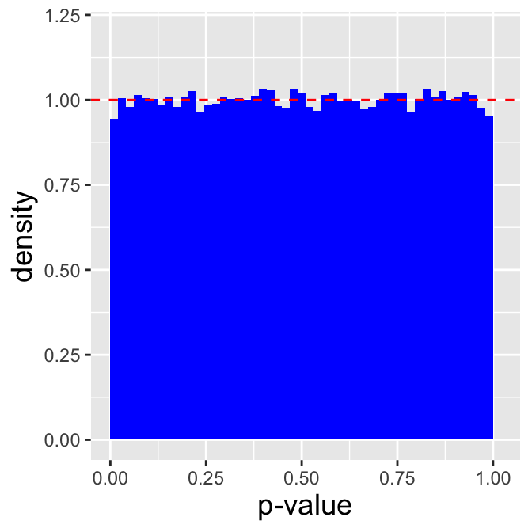
Because we are performing a simulation, the number of observations falling into each histogram bin is a random variable, and thus we observe some amount of “noise” in Figure 1.36 (i.e., some amount of variation around the dashed red line)…but nevertheless we can visually infer that the sampling distribution for \(p\) is uniform (i.e., flat). (For completeness, the number of counts in each bin are collectively sampled from a multinomial distribution, where the probability of a count being recorded in any given bin being the reciprocal of the number of bins. We introduce the multinomial distribution in Section 3.3.3.)
Now, what if the null hypothesis is not correct? What will happen to the distribution of \(p\)-values? The answer depends on the circumstance: if we are performing an lower-tail test (with \(E[Y]\) increasing with \(\theta\)) and the true mean is larger than the hypothesized mean, then the \(p\)-values will skew towards 1: we are less likely to reject the null when its value is closer to the tail of interest than the true value is. If the true mean is smaller than the hypothesized mean, the \(p\)-values will skew towards 0. See Figure 1.37 for a demonstration of the latter point.
The proportion of p-values < 0.05 is 0.29707 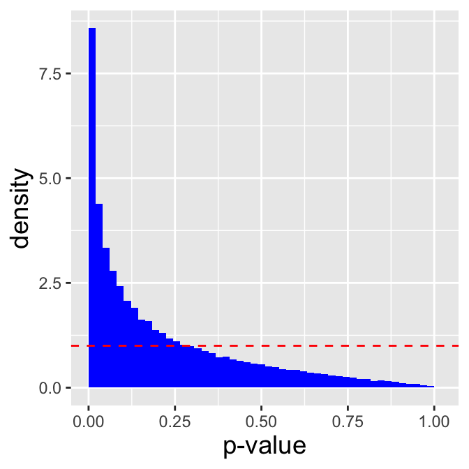
In Figure 1.37, 29.71% of the counts are observed as having value less than \(\alpha = 0.05\)…so we are more likely to reject the null. And as the true mean gets smaller and smaller than \(\mu_o = 3\), the number of counts in the first bins will increase…meaning that null becomes more and more easily rejected. This example foreshadows the concept of hypothesis test power, which we introduce in Section 2.13.1.
We will make three important statements about \(p\)-values here, ones that are good for all readers to remember.
- A p-value is not the probability that the null hypothesis is correct! A hypothesis is not a random variable, and there is thus no probability associated with it. A \(p\)-value is the probability of observing a more extreme hypothesis test statistic than what we actually observe, conditioned on the null hypothesis being correct.
- We cannot select the Type I error rate \(\alpha\) after computing the p-value. We specify the Type I error rate \(\alpha\) before data are analyzed; specifying it afterwards opens up the analysis procedure to bias: “my \(p\)-value is 0.09…so I’ll set \(\alpha = 0.1\) so that I can reject the null.”
- We cannot perform multiple hypothesis tests without correcting our result. Suppose that we perform 100 independent hypothesis tests, each with \(\alpha = 0.05\). Even if the null is true for every test, we will end up rejecting the null approximately five times. (Not necessarily exactly five times: the number of rejections we observe is a random variable with mean of five.) That we will reject an increasing number of null hypotheses with an increasing number of tests is inevitable: this is a feature of hypothesis testing, not a bug. When performing multiple tests, we need to apply a correction factor to each observed \(p\)-value, such as a Bonferroni correction (e.g., if \(m\) is the number of conducted tests, reset \(\alpha\) to \(\alpha/m\)) or the less conservative false-discovery rate (FDR) correction. Otherwise, we are engaging in p-hacking and data dredging. We discuss correction factors in more detail in Section 7.6.
1.17.3.4 Simulation: Estimating a p-Value
In the second example above, we determine that if we sample a statistic \(Y\) from the distribution \(f_Y(y) = \theta (1-y)^{\theta-1}\), with \(y \in [0,1]\), and if \(\theta_o = 1\) and \(y_{\rm obs} = 0.9\), then the \(p\)-value is 0.01. Here, we show how we can compute a \(p\)-value via simulations.
As a reminder, we have identified \(f_Y(y)\) as being part of the beta family of distributions, which we officially introduce in Section 3.3.4; thus we can utilize
rbeta()like we do in the last example above.
Code
set.seed(101)
n <- 1
num.sim <- 10000
theta.o <- 2
y.obs <- 0.9
Y <- rbeta(n * num.sim, 1, theta.o)
(p <- sum(Y >= y.obs) / num.sim)[1] 0.0108Our estimated \(p\)-value is 0.0108: in 108 of the 10000 simulated experiments, the observed statistic was equal to or greater than what we observed in our one actual experiment. Because we do not perform an infinite number of simulations, the estimated \(p\)-value is a random variable, and we do not expect it to match the true value of 0.01 exactly. What we observe is very strong evidence that our simulated \(p\)-value is both a precise and accurate estimate of the true value. In Section 3.7, we will learn how to turn this evidence into something more firmly quantitative.
1.18 Exercises
We are given that for the events \(A\) and \(B\), \(P(A \vert B) = P(B \vert A)\). We are also given that \(P(\bar{A} \cap \bar{B}) = 0.2\). Express \(P(A \cap B)\) as a function of \(P(A)\).
We are given that \(A \subset B\) and that \(P(A) > 0\) and \(0 < P(B) < 1\). Can the events \(A\) and \(B\) be independent events?
Re-express the conditional probability \(P(A \cap B \vert A \cup B)\) in terms of two unconditional probabilities that reference only the events \(\bar{A}\) and \(\bar{B}\).
We are given that \(P(B) = 1/2\), \(P(B \vert A) = 1/4\), and \(P(A \vert \bar{B}) = 1/3\). (a) What is \(P(A \cap B)\)? (b) What is \(P(B \vert \bar{A})\)?
Re-express the probability \(P(\bar{A} \vert \bar{B})\) as a function of \(A\) and \(B\) only.
We draw two balls from an urn containing two white and three black balls, without replacement. What is the probability that the second drawn ball is black?
A student answers a multiple-choice question with five possible answers. Assume the probability that the student knows the answer is 0.6 (and thus that the probability that the student will guess is 0.4). Also assume that the probability of getting the question right when guessing is 0.2. If the student gets the question right, what is the probability that he knew the answer?
A study of the residents of a region showed that 15 percent were smokers. The probability of death due to lung cancer, given that a person smoked, was ten times the probability of death due to lung cancer, given that the person did not smoke. If the probability of death due to lung cancer in the region is 0.01, what is the probability that a person was a smoker, given that he or she died of lung cancer?
We play a particular game in which we roll a three-sided die. (Assume one exists!) We repeatedly roll the die until we fail to roll a 1. Our score is the total sum of all rolls, including the last roll. We win the game if our score is greater than 3. What is the probability that we win a single instance of this game? (It may help to recall that if we have a sequence of events {\(A,BA,BBA,...\)}, with associated unchanging probabilities \(P(A)\) and \(P(B)\), then the sum of the event probabilities is \(P(A)/[1-P(B)]\).)
We are given a coin with a memory. Let \(H_i\) and \(T_i\) denote the events of observing heads and tails on the \(i^{\rm th}\) flip, respectively. Assume \(P(H_1) = P(T_1) = 0.5\), and that \(P(H_{i+1} \vert T_i) = 0.6\) and \(P(T_{i+1} \vert H_i) = 0.3\). Compute \(P(H_1 \cup T_2)\).
If a water specimen contains nitrates, a solution dropped into it will cause it to turn red 90 percent of the time. When used on water specimens without nitrates, the solution causes the water to turn red 15 percent of the time. Nitrates exist in 20 percent of the specimens. (a) What is the probability that a randomly selected specimen will turn red when tested? (b) What is the probability that a randomly selected specimen contains nitrates, if it turns red when tested?
Of travelers arriving at a small airport, 60 percent fly on major airlines, 30 percent on private planes, and 10 percent on other aircraft. Of those on the major airlines, 50 percent travel for business, while 60 percent of the private plane takers are business travelers and 90 percent of those on other aircraft are business travelers. We select a traveler at random. (a) What is the probability that he or she is a business traveler? (b) What is the probability that he or she arrived on a private plane, given that he or she is a business traveler?
We have an urn with four balls, two of which are red and two of which are black, and we sample without replacement from the urn. Let \(X\) be the number of draws that we make until the first red ball is drawn. (a) What is the expected value of \(X\)? (b) What is the variance of \(X\)?
We possess three bowls that are labeled 1, 2, and 3. Bowl 1 contains one white and two black balls. Bowl 2 contains two white and one black balls. Bowl 3 contains three white balls. We select a bowl at random, and then sample two balls from that bowl, without replacement. (a) What is the probability of observing two white balls? (b) Given that we observe two white balls, what is the probability that they were sampled from bowl number 3?
Two methods are available for learning a certain skill, method \(A\) and method \(\bar{A}\). Method \(A\) is less expensive, and thus it is used 80 percent of the time (with method \(\bar{A}\) being used the rest of the time). Let \(F\) be the event of failing to learn the skill: if method \(A\) is used, the failure rate is 20 percent, while for \(\bar{A}\) the rate is 10 percent. (a) What is the probability of failure, \(P(F)\)? (b) What is the probability that a person who failed was taught using method \(A\)?
Below we display a (partially known) probability mass function. We know that \(E[X] = 1.6\). What is \(P(\mu - \sigma \leq X \leq \mu + \sigma)\)?
| \(x\) | \(p_X(x)\) |
|---|---|
| 0 | ? |
| 1 | 0.5 |
| 2 | ? |
| 3 | 0.3 |
We are given the following pdf: \[\begin{align*} f_X(x) = \left\{ \begin{array}{cc} c/x^2 & 1 \leq x \leq 2 \\ 0 & \mbox{otherwise} \end{array} \right. \,. \end{align*}\] What is \(P(X > 1.25 \vert X < 1.5)\)?
We are given the following pdf: \[\begin{align*} f_X(x) = \left\{ \begin{array}{cc} c x^2 (1-x) & 0 \leq x \leq 1 \\ 0 & \mbox{otherwise} \end{array} \right. \,. \end{align*}\]
- What is \(c\)? (b) What is \(P(X > 1/2)\)? (c) What is \(E[X]\)?
We flip a fair coin two times. Let \(X_i\) denote the result of flip \(i\): \(X_i = 1\) for heads, and \(X_i = 0\) for tails. Now, let \(Y = \vert X_2 - X_1 \vert\). (a) What is the standard deviation of \(Y\)? (b) What is \(P(\mu - \sigma < Y < \mu + \sigma)\)?
We independently sample two data, \(X_1\) and \(X_2\), from the distribution \[\begin{align*} f_X(x) = 3x^2 ~~~ x \in [0,1] \,. \end{align*}\] (a) What is the mean of this distribution? (b) What is the variance of this distribution? (c) What is the mean of \(2X_1-2X_2\)? (d) What is the variance of \(2X_1-2X_2\)?
Let the cumulative distribution function \(F_X(x)\) be given by \[\begin{align*} F_X(x) = \left\{ \begin{array}{cc} 0 & x < 0 \\ x^3 & 0 \leq x \leq 1 \\ 1 & x > 1 \end{array} \right. \,. \end{align*}\] (a) Write down the probability density function. (b) Compute \(V[X]\). (c) What is the probability that an observed random variable \(X\) takes on a value less than 1/2, given that it is greater than 1/4?
Below we display a cumulative density function for a discrete random variable. What is \(V[X]\)?
| \(x <\) 0 | \(0 \leq x < 1\) | \(1 \leq x < 3\) | \(x \geq 3\) | |
| \(F_X(x)\) | 0 | 0.5 | 0.75 | 1 |
We are given the following cumulative density function: \[\begin{align*} F_X(x) = \left\{ \begin{array}{cc} cx^2 & 0 \leq x \leq 1 \\ 0 & \mbox{otherwise} \end{array} \right. \,. \end{align*}\] (a) What is the value of \(c\)? (b) What is \(E[X]\)? (c) What is \(\sigma\)?
We are given the following probability density function: \[\begin{align*} f_X(x) = \left\{ \begin{array}{cc} a & 0 \leq x < 1 \\ bx & 1 \leq x < 2 \\ 0 & \mbox{otherwise} \end{array} \right. \,, \end{align*}\] where \(a\) and \(b\) are constants. (a) What is the largest value that \(b\) can have such that \(f_X(x)\) is a valid pdf? (b) Let \(a\) = 1/2 and \(b\) = 1/3. What is \(F_X(x)\)?
See the probability mass function table below. (a) If \(E[X] = 2\), what is the value of \(y\)? (b) If \(y = 3\), what is \(\sigma\) for this distribution? (c) Assume \(y = 3\). What is \(P(\mu-\sigma \leq X \leq \mu+\sigma)\)?
| \(x\) | 0 | 1 | \(y\) |
| \(p_X(x)\) | 0.4 | 0.4 | 0.2 |
We are given the following hybrid probability density/mass function: \[\begin{align*} g_X(x) = \left\{ \begin{array}{ll} 0.2 & x = -1 \\ c & x \in [0,1] \\ 0.2 & x = 2 \\ 0 & \mbox{otherwise} \end{array} \right. \,. \end{align*}\] (a) What is the value for \(c\)? (b) What is \(E[X]\)? (c) What is the cumulative distribution function \(F_X(x)\)?
We are given the probability density function \[\begin{align*} f_X(x) = \left\{ \begin{array}{ll} e^{-x} & x \in [0,\infty) \\ 0 & \mbox{otherwise} \end{array} \right. \,. \end{align*}\] (a) What is the cdf for \(x \geq 0\)? (b) What is \(P(X > 1)\)? (c) What is \(P(X < 1/2 \cup X > 2)\)? (d) What is the probability that \(X < 2\), given that \(X > 1\)?
We are given the probability density function \[\begin{align*} f_X(x) = \left\{ \begin{array}{ll} -x & x \in [-1,0) \\ x & x \in [0,1] \\ 0 & \mbox{otherwise} \end{array} \right. \,. \end{align*}\] (a) What is \(E[X]\)? (b) What is \(V[X]\)? (c) What is an expression for \(F_X(x)\) that is valid over the range \(x \in [0,1]\)?
We are given the following cumulative distribution function: \[\begin{align*} F_X(x) = \left\{ \begin{array}{ll} 0 & x \leq 0 \\ cx^2 & x \in (0,1] \\ 1 & x > 1 \end{array} \right. \,. \end{align*}\] (a) What is the value of \(c\) that makes \(f_X(x)\) a valid pdf? (b) What is \(E[X]\)?
We are given the following probability density function: \[\begin{align*} f_X(x) = \left\{ \begin{array}{cc} c & 0 \leq x < 1 \\ e^{-x} & 1 \leq x < \infty \\ 0 & \mbox{otherwise} \end{array} \right. \,, \end{align*}\] where \(c\) is a constant. (a) What is the value of \(c\) that makes \(f_X(x)\) a valid pdf? (b) What is the cumulative distribution function?
Below we display a probability mass function. (a) What is \(c\)? (b) What is the value of the cumulative distribution function at \(x=0.5\)? (c) What is the inverse cdf for \(q = 0.9\)? (d) What is the variance \(V[X]\)?
| \(x\) | -1 | 0 | 1 |
| \(p_X(x)\) | 1/6 | \(c\) | 1/6 |
We are given the following cumulative density function: \[\begin{align*} F_X(x) = x^3 \,, \end{align*}\] for \(x \in [0,1]\). (a) What is the probability density function, \(f_X(x)\), for \(x \in [0,1]\)? (b) What is \(P(1/4 \leq X \leq 3/4)\)? (c) What is \(P(X \leq 1/4 \vert X \leq 1/2)\)? (d) If \(q = F_X(x)\), what is the inverse cdf, i.e., what is \(F_X^{-1}(q)\)?
We draw three iid data \(\{X_1,X_2,X_3\}\) according to a probability distribution that has expected value \(\mu = 1\) and variance \(\sigma^2 = 1\). Let \(Y = X_1 + 2X_2 - 3X_3 - 4\). (a) What is \(E[Y]\)? (b) What is the variance of \(Y\)? (c) What is \(E[Y^2]\)?
We are working with a probability density whose domain is \(x \in [0,2]\), and we are given that \[\begin{align*} F_X(x) = cx^3 \end{align*}\] within that domain. (a) What is the value of \(c\)? (b) What is \(f_X(x)\)? (c) What is \(P(X < 1/2 | X < 1)\)?
We sample a single datum \(X\) according to the probability density function \(\theta x^{\theta-1}\), with \(x \in [0,1]\). Let \(\theta\) itself be a random variable sampled according to a probability mass function with values 1/2 for \(\theta = 1\) and 1/2 for \(\theta = 2\). What is \(p_X(x)\) or \(f_X(x)\)? (Whichever is appropriate.)
We are given the following probability density function: \[\begin{align*} f_X(x) = 6 x (1-x) \,, \end{align*}\] for \(x \in [0,1]\). (a) What is \(E[X]\)? (b) Now assume that we have drawn \(n\) iid data according to this distribution and that we compute the sample mean \(\bar{X} = (1/n)\sum_{i=1}^n X_i\). What is \(E[\bar{X}]\)?
We are given the following probability density function: \[\begin{align*} f_X(x) = \frac{1}{2} ~~~ x \in [-1,1] \,, \end{align*}\] for which \(E[X] = \mu = 0\) and \(V[X] = \sigma^2 = 1/3\). We draw two iid data from this distribution, and we propose two estimators for \(\mu\): \(\hat{\mu}_1 = X_1-X_2\), and \((X_1+X_2)/2\). (a) What is the bias for each estimator? (b) What is the variance for each estimator? (c) What is the mean-squared error for each estimator. (d) Which estimator is better?
In an experiment, we sample \(n\) iid data that we assume were drawn according to the following probability density function: \[\begin{align*} f_X(x) = a (1+x)^{-(a+1)} \,, \end{align*}\] for \(x \geq 0\) and \(a > 0\). (a) What is the log-likelihood function \(\ell(a \vert \mathbf{x})\)? (b) What is the maximum likelihood estimate \(\hat{a}_{MLE}\)? (c) The mean of the distribution is \(\mu = 1/(a-1)\). What is \(\hat{\mu}_{MLE}\)?
We are given the following probability density function: \[\begin{align*} f_X(x) = \theta (1-x)^{\theta - 1} \,, \end{align*}\] where \(x \in [0,1]\) and \(\theta > 0\). Assume that we have sampled \(n\) iid data according to this pdf. (a) What is the log-likelihood \(\ell(\theta \vert \mathbf{x})\)? (b) What is the maximum-likelihood estimate for \(\theta\)? (c) For the distribution above, the population mean is \(\mu = E[X] = 1/(1+\theta)\). What is the MLE for \(\mu\)?
We are given \(n\) iid data that were sampled according to the following probability density function: \[\begin{align*} f_X(x) = \alpha x^{\alpha-1} \,, \end{align*}\] with \(\alpha > 0\) and \(0 \leq x \leq 1\). What is the maximum likelihood estimator for \(\alpha\)?
We are given \(n\) iid data that are sampled according to the following probability mass function: \[\begin{align*} p_X(x) = (1-p)^{x-1}p \,, \end{align*}\] with \(0 < p < 1\) and \(x = \{1,2,3,\ldots\}\). For this distribution, \(E[X] = 1/p\) and \(V[X] = (1-p)/p^2\). (a) What is the maximum likelihood estimator for \(1/p\)? (b) Write down \(V[\widehat{1/p}_{MLE}]\), i.e., the variance of the MLE for \(1/p\).
We sample \(n\) iid data according to the following probability density function: \[\begin{align*} f_X(x) = 1 ~~~ x \in \left[ \theta - \frac12 , \theta + \frac12 \right] \end{align*}\] For this distribution, \(E[X] = \theta\) and \(V[X] = \theta^2/12\). A friend, who didn’t really think things through, suggested \(\hat{\theta} = (X_1 - X_2)/2\) as an estimator for \(\theta\). It is up to us to characterize this estimator. (a) What is the bias of \(\hat{\theta}\)? (b) What is the variance of \(\hat{\theta}\)? (c) What is the mean-squared error for \(\hat{\theta}\)? (d) One of us suggests changing the minus sign in the estimator to a plus sign: that at least makes the estimator unbiased. What is the mean-squared error for this new estimator?
We sample \(n\) iid data according to an exponential distribution: \[\begin{align*} f_X(x) = \frac{1}{\theta} e^{-x/\theta} \,, \end{align*}\] where \(x \geq 0\) and \(\theta > 0\). For this distribution, \(E[X] = \theta\) and \(V[X] = \theta^2\). We propose the estimator \(\hat{\theta} = X_1 - X_2/n\). (a) What is the bias for this estimator? (b) What is the variance for this estimator?
We are given a sample of \(n\) iid data drawn according to the probability density function \[\begin{align*} f_X(x) = c e^{-\theta x} \theta^{x-1} \,, \end{align*}\] where \(\theta \in [0,1]\), \(c > 0\), and \(x\) is a positive integer. (a) What is the log-likelihood function? (b) What is the maximum likelihood estimate for \(\theta\)? (c) The mean of this distribution is \(\mu = 1/(1-\theta)\). What is the MLE for \(\mu\)?
We sample a single datum \(X = x_{\rm obs}\) according to the following probability density function: \[\begin{align*} f_X(x) = a(1+x)^{-a-1} \,, \end{align*}\] where \(x \geq 0\) and where we will assume \(a > 1\). Let the statistic \(Y = X\); the expected value for \(Y\) is \(E[Y] = 1/(a-1)\). (a) What is \(F_Y(y)\)? (b) Given \(\alpha = 0.05\), derive a lower bound on the parameter \(a\).
A logistic distribution with scale parameter 1 has the probability density function \[\begin{align*} f_X(x) = \frac{\exp[-(x-\mu)]}{(1+\exp[-(x-\mu)])^2} \,, \end{align*}\] for \(x\) and \(\mu\) both \(\in (-\infty,\infty)\). The cumulative distribution function is \[\begin{align*} F_X(x) = \frac{1}{1+\exp[-(x-\mu)]} \,, \end{align*}\] and the expected value of \(X\) is \(E[X] = \mu\). We draw a single datum \(X\) from this distribution. Let the statistic \(Y = X\). (a) What is the rejection region boundary for a lower-tail test given the null hypothesis \(H_o : \mu = \mu_o = 0\)? Assume \(\alpha\) = 0.05. (b) For the test in (a), if \(y_{\rm obs} > y_{\rm RR}\), do we reject the null hypothesis, or fail to reject the null hypothesis? (c) If instead we were to perform a two-tail test given the same value of \(\alpha\), would the new lower rejection region boundary be further from \(\mu_o\) than the boundary you found in part (a), or closer to \(\mu_o\)?
In an experiment, you sample a single datum \(X\) from a distribution whose cumulative distribution function is \[\begin{align*} F_X(x) = e^{-e^{-(x-\theta)}} \,, \end{align*}\] where \(x \in (-\infty,\infty)\) and \(\theta \in (-\infty,\infty)\). The statistic is \(Y = X\); its observed value is \(y_{\rm obs} = x_{\rm obs}\). The expected value of the \(Y\) is \(E[Y] = \theta + \gamma\), where \(\gamma\) is a constant. (a) Write down a one-sided \(100(1-\alpha)\)-percent upper bound for \(\theta\). (b) Write down the lower bound for a two-sided \(100(1-\alpha)\)-percent confidence interval for \(\theta\). No explicit work need be shown for part (b), where it is possible to reason out the answer without math.
In an experiment, you sample a single datum \(X\) from a distribution whose cumulative distribution function is \[\begin{align*} F_X(x) = 1 - e^{-(x-2)/\theta} \,, \end{align*}\] for \(x \geq 2\) and \(\theta > 0\). The statistic is \(Y = X\); its observed value is \(y_{\rm obs} = x_{\rm obs}\). The expected value of \(X\) is \(E[X] = \theta + 2\). (a) Write down the rejection-region boundary for the upper-tail test \(H_o : \theta = \theta_o = 1\) versus \(H_a : \theta > \theta_o\). Assume the Type I error is \(\alpha\). (b) If \(y_{\rm obs} < y_{\rm RR}\), what conclusion do you reach: “reject” (the null) or “fail to reject”? (c) Write down the lower rejection-region boundary for the two-tail test \(H_o : \theta = \theta_o = 1\) versus \(H_a : \theta \neq \theta_o\). No explicit work need be shown for part (c), where it is possible to reason out the answer without math.